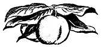

Персик

Хозяйственное значение персика и его распространение
Персик — одно из прекраснейших плодовых растений юга. Трудно представить себе плоды, более совершенные по красоте и вкусовым качествам. Тонкий аромат, приятно освежающий вкус, утоляющий жажду сок и высокая питательность мякоти — всё это присуще персику.
Высокие диетические свойства этих плодов делают их ценным продуктом питания.
Старинная восточная фармакопея приписывала персику ряд целебных свойств. Ещё Плиний в книге «История природы» указывал, что римляне употребляли плоды персика для «успокоения гневного расположения духа» и для улучшения аппетита.
И, действительно, плоды персиков по химическому составу богаты сахаром, и потому их с полным основанием можно рассматривать как высококачественные пищевые продукты. В то же время, вследствие значительного содержания в них органических кислот и ароматических веществ, они обладают и прекрасными вкусовыми качествами.
Персики богаты так называемыми «защитными факторами питания» — витаминами и минеральными солями. Они, наряду с абрикосами и сливами, способствуют образованию гемоглобина и красных кровяных шариков в организме человека. По способности восстановления в организме гемоглобина эти продукты сравниваются с печенью. Так, принимая интенсивность данного действия печени за 100, согласно сообщению проф. Н. В. Сабурова, для плодов персиков и абрикосов оно приравнивается к 40, а для чернослива — к 35. Как и многие другие плоды, персик оказывает весьма полезное действие на поддержание необходимого кислотно-щелочного равновесия в крови и тканях организма.
Наряду с употреблением в свежем виде, плоды персика широко используются в кулинарии и всякого рода переработках. Персиковые пироги, персики со сливками, персиковый крем, персиковое мороженое — изысканные десертные блюда.
Особым образом замороженные персики превосходно сохраняют вкусовые качества в течение круглого года. Персики сушёные целиком и начинённые толчёными орехами с сахаром являются любимым лакомством народов Кавказа.
Персиковые мармелады, цукаты, повидло, джем, варенье, компоты выгодно выделяются своими качествами среди тех же продуктов из других плодов. Персиковые прохладительные напитки, персиковое вино высоко оцениваются любителями. Масло, полученное из персиковых семян, с успехом используется для тех же целей, что и миндальное, а сладкие семена, содержащиеся в отдельных сортах персика, могут заменять миндаль.
Древесина персиковых растений прекрасно полируется и может использоваться на всякого рода изделия. Уголь, изготовленный из косточек персиков, используется в химической промышленности.
Этот перечень достоинств персика был бы далеко не полным, если бы мы не упомянули о декоративных качествах персикового дерева. Цветущий персиковый сад с его крупными нежно-розовыми цветками, густо покрывающими ветви сравнительно невысоких деревьев, имеет поистине сказочный вид. Отдельные цветущие персиковые деревья в сочетании с нежными белоцветковыми алычами и черешнями создают чудеснейшие картины с изумительным нежным сочетанием красок. Наличие среди персиковых растений ряда чисто декоративных форм с махровыми цветками, различной окраской лепестков (белой, розовой и красной), с различными формами крон (шаровидной, пирамидальной и плакучей) и т. д. делают их ценными украшениями для парков и усадеб.
Рис. 333. Махровые цветки декоративного персика.
Персик — одна из самых скороспелых плодовых культур. Только ягодные кустарники, виноград и инжир могут конкурировать с ними в данном отношении. При нормальном уходе деревья персиков вступают в период плодоношения на второй-третий год после их посадки на постоянное место. Очень часто саженцы ряда сортов персика, оставленные в питомнике на второй год, густо покрываются плодами. Персиковые деревья в нормальных условиях произрастания отличаются регулярной и сравнительно высокой урожайностью и при всём этом сравнительно непродолжительным периодом продуктивной жизни (18–20 лет).
Всё это, вместе взятое, делает персик незаменимой культурой для использования в качестве временных, междурядных посадок среди высокорослых и более долговечных деревьев семечковых и косточковых пород. При такой системе посадок значительно быстрее покрываются расходы на закладку плодового сада. Создаваемое при этом уплотнение насаждений, улучшает микроклимат в саду и способствует лучшему сохранению деревьев от неблагоприятных метеорологических условий.
Ни одна из плодовых культур не имеет такого разнообразия сортов, отличающихся по срокам созревания их плодов, как персик. С конца июня до конца октября — таков предел варьирования его сортов по этому признаку в условиях южных районов СССР (Крым, Армения, Грузия и др.).
Персиковые деревья хорошо произрастают на весьма разнообразных подвоях: на персике, миндале, абрикосе, алыче, тёрне, персике Давида, персике Мира и др., с самыми разнообразными требованиями к почвенным условиям. Вследствие этого данная порода отличается большой приспособляемостью к различным почвенным условиям — от тяжелоглинистых и увлажнённых — на алычевом подвое, до сухих щебенчатых и шиферных почв — на миндальном подвое.
Таковы вкратце основные особенности и качества персиковой культуры, придающие ей большое народнохозяйственное значение для отдельных районов южной зоны плодоводства.
История культуры персика
Долгое время считалось, что родиной персика является Иран (Персия). На это указывали Теофраст (332 год до нашей эры), Колумелла и Плиний (79 год до нашей эры), и этого взгляда придерживались ботаники вплоть до конца XIX в. Данная гипотеза основывалась на том, что большинство европейских стран получили персики из Ирана, где это растение с давних времён было широко распространено.
Однако, на основании изучения обширных материалов видных ботаников, было установлено, что персик никогда не был распространён в диком виде в Иране и что его родиной является Китай.
Новейшие исследования ряда учёных убеждают нас в том, что персик действительно произошёл из Китая. Надёжным доказательством этого является обнаружение в Китае, в провинциях южной Шэньси (на высоте около 1200 м над уровнем моря), центральной Шэньси, южной Ганьсу и в восточной части Тибета (на высоте 2000 м над уровнем моря) большого разнообразия диких персиков. Позднее дикие персики были обнаружены также и в провинциях Хубэй и Сычуань — на высоте 2600 м над уровнем моря.
В настоящее время считается установленным, что в Китае персик был введён в культуру гораздо раньше, чем в какой-либо другой стране. Так, в китайской литературе о культуре персика упоминалось за 2000 лет до введения его во владения Греции и Рима и за 1000 лет до введения его в Иран и сопредельные с ним страны.
В Иран персик попал из Китая через современную территорию наших среднеазиатских республик, а отсюда он распространился на запад и проник в Закавказье. В первом столетии нашей эры он был введён в средиземноморские страны.
Распространение персика
По своему происхождению персик — растение горных стран и отличается значительной приспособляемостью к различным климатическим и почвенным условиям. Так, при своём движении на север, в нашей стране он дошёл почти до Владивостока (селение Посьетовка); в Северной Америке он продвинулся до провинции Онтарио, в Канаде. На юге же персик достиг почти тропиков и успешно произрастает на островах Канарских, Азорских, Гавайских и Вест-Индии.
Колонизаторы в своём движении на юг перенесли персики за экватор, и он стал излюбленным плодовым деревом в садах стран с умеренным климатом южного полушария. Таким образом, ареал распространения культурного персика очень широк: приблизительно от 50° с. ш. до 35–40° ю. ш.
Амплитуда высотного распространения персика также чрезвычайно широка: от уровня моря до высоты 3000 м в Северной Индии и Гималаях; чем ближе к экватору, тем больше высота, на которой произрастает персик.
Персик отличается меньшей холодостойкостью, чем абрикос, и северная граница его проходит несколько южнее последнего, в значительной степени совпадая с северной границей культуры винограда. Тем не менее территориальные возможности промышленной культуры персика, в пределах указанных границ, значительно шире, чем у абрикоса. Отличаясь в массе своей более поздним, чем абрикос, цветением и менее страдая от грибных болезней, персик с успехом можно разводить там, где промышленная культура абрикоса, по указанным причинам, не может найти себе места, как, например, влажные районы Западного Закавказья.
Рис. 334. Распространение культуры персика в СССР.
Северная граница произрастания персика в СССР проходит от Тирасполя, немного выше Николаева, Херсона, Мелитополя, через Жданов, Ростов-на-Дону, Ейск, приближаясь здесь в большей своей части к Черноморскому и Азовскому побережьям, откуда пересекает Майкопский, Орджоникидзевский районы и поднимается к Астрахани. В Средней Азии северная граница культуры персика проходит от Хорезмского оазиса на Арысь, Чимкент, Алма-Ата и Панфилов. С появлением же более холодостойких сортов отечественной селекции (сорта акад. Кащенко и др.) имеются перспективы некоторого расширения этих границ.
В высотном разрезе в СССР культурный персик произрастает почти от уровня моря (Черноморское побережье Кавказа и Крыма) до высоты 1840 м над уровнем моря (Памир, долина р. Ванг). В Армении, Грузии и Дагестане культура персиков доходит примерно до высоты 1100–1200 м над уровнем моря. В Крыму же персик в настоящее время не поднимается выше 500 м над уровнем моря.
Промышленные насаждения в указанных горных районах занимают более низкие зоны, по сравнению с верхними высотными границами произрастания данной культуры. Так, основные промышленные персиковые массивы Ферганской долины в Средней Азии расположены на высоте от 400 до 1000 м, а в горном Дагестане — от 200 до 800 м.
Культура персика в СССР
К началу первой пятилетки в Советском Союзе насчитывалось не более 5000 га персиковых насаждений. За годы же сталинских пятилеток эта площадь во много раз увеличилась, но тем не менее она далеко ещё не достаточна, чтобы удовлетворить всё возрастающие потребности в этих плодах в нашей стране.
Слабое развитие культуры персика в дореволюционной России объяснялось, главным образом, затруднениями с перевозкой и сбытом свежих плодов в более отдалённых районах и слабым развитием плодообрабатывающей промышленности. Отсутствие хорошо налаженного изотермического транспорта, установок для предварительного охлаждения плодов не давало возможности перевозить свежие персики на большие расстояния.
Лишь примитивная солнечная сушка, не требующая сложного оборудования, издавна широко применялась в ряде районов республик Средней Азии и Закавказья.
Великая Октябрьская социалистическая революция резко изменила всю экономику нашей страны. Потребителями плодов стал весь многомиллионный трудовой советский народ. Советское правительство во всю ширь поставило задачу обеспечения максимального и бесперебойного снабжения трудящихся плодами в свежем и переработанном виде в течение круглого года. Дальнейшие широкие планы развития транспорта, холодильного дела и технической переработки плодов в СССР делают возможным плановое снабжение трудящихся, даже самых отдалённых районов, свежими и консервированными плодами таких нежных и высококачественных культур, какой является персик. Поэтому вполне естественно, что проблема значительного расширения культуры персиков в СССР в соответствии с запросами социалистического хозяйства встала сейчас со всей остротой. Наша страна имеет все возможности для её разрешения в самые короткие сроки.
Наиболее мощными центрами современного производства персиков в СССР являются:
- Средняя Азия (Узбекская и Таджикская ССР),
- Закавказье (Армянская и Грузинская ССР),
- Дагестанская АССР, Крым.
Кратко остановимся на характеристике состояния этой культуры в каждой из указанных республик.
Среднеазиатские республики
Персик, после абрикоса, почти во всех среднеазиатских республиках является одной из самых популярных плодовых культур. Наиболее широкое развитие эта культура получила в садовых районах Ферганской, Гиссарской и Зеравшанской долин, а также в Бухарском, Хорезмском, Ташкентском и других оазисах, где персик является неотъемлемой частью почти каждого сада. Основная масса персиковых садов размещается на высоте от 400 до 1000 м над уровнем моря.
За годы сталинских пятилеток неизмеримо выросло промышленное значение культуры персика в Средней Азии. Старые персиковые насаждения здесь обычно не имели сплошных массивов, а были представлены отдельными деревьями, разбросанными среди других плодовых культур по границам участков, среди виноградников и полей, в чрезвычайно пёстром сортовом составе (преимущественно в виде сеянцев).
В связи с широко применявшимся здесь семенным размножением и длительным массовым отбором в определённом направлении, был создан ряд специфических местных сортов (точнее сортотипов) персиков, относительно устойчиво передающих свои основные признаки при семенном размножении и отличающихся высокой приспособленностью к местным условиям произрастания.
Среди них главнейшими являются следующие:
- Ак-шафталю,
- Кизыл-шафталю,
- Инжир-шафталю,
- Чильги,
- Рогани гоу,
- Кесма,
- Ойлор и другие.
Большинство из перечисленных персиков являются хорошими столовыми и сухофруктовыми сортами, характеризуясь сочными сахаристыми плодами с отделяющейся косточкой и только незначительная часть их (типа Кесма) пригодна для консервирования.
Лучшие представители указанных сортотипов, отобранные местными опытными учреждениями, вошли в списки стандартных сортиментов. Новые посадки персиков, заложенные за последние 15–20 лет в Ферганской, Ташкентской и Самаркандской областях и в ряде районов Среднего и Северного Таджикистана, представлены в виде крупных однопородных массивов (или в качестве промежуточных насаждений среди других пород) с определённым, довольно ограниченным сортиментом, обеспечивающим поступление больших партий плодов.
Широкое место среди них занимает ряд интродуцированных сортов, завезённых сюда преимущественно из Крыма, как-то: Амсден, Ранний Александра, Эльберта, Сальвей, Нектарин белый и ряд других. В Ташкентском оазисе распространён сорт Заргалдак, являющийся, по всей вероятности, сеянцем сорта Эльберта.
Благоприятные климатические, почвенные и водные условия ряда плодовых районов открывают широкие перспективы для дальнейшего расширения этой культуры. Основным направлением культуры персиков в этих районах должно быть производство свежих, консервированных, а также и сушёных плодов для снабжения местного населения и ближайших индустриальных центров, Сибири, Южного Урала и Дальнего Востока. В отношении изготовления консервированных и сушёных персиков они могут занять ведущее место в нашей стране.
В связи с этим чрезвычайно актуальным является введение в производство высококачественных и устойчивых консервных и транспортабельных столовых сортов разных сроков созревания в целях обеспечения беспрерывного снабжения свежими плодами в течение максимально длительного периода.
В этом направлении большая работа проводится Самаркандской плодово-ягодной опытной станцией, Среднеазиатской станцией Всесоюзного института растениеводства, Таджикским научно-исследовательским институтом и рядом других опытных учреждений Средней Азии.
В 1937–1938 гг. Никитским Ботаническим садом им. Молотова совместно с Среднеазиатской станцией ВИРа и Главконсервом были заложены в совхозах Янги-Юльском, Ферганском и Ленинабадском участки производственного испытания подобранных с этой целью новых для Средней Азии сортов. В итоге всех этих работ указанных опытных учреждений в настоящее время выделен ряд перспективных сортов, частично вошедших уже в списки современных стандартов для Узбекской и Таджикской ССР.
Основными из этих сортов являются следующие:
- Арп,
- Гоум клинг,
- Гринсборо,
- Гаяр № 9,
- Зафрани,
- Золотой юбилей,
- Камберлэнд,
- Майский цветок,
- Наринджи,
- Прекрасный,
- Поздний Кравфорда,
- Ранний Эльберта,
- Ранний Галя,
- Рочестер,
- Слава Тарнау,
- Хидиставский поздний жёлтый и ряд других.
Узбекская ССР
Незадолго перед Великой Отечественной войной в пределах Узбекской ССР персики составляли 13% общего числа плодовых деревьев. Основная часть персиковых насаждений здесь сконцентрирована в Ферганской (49,5%) и в Ташкентской (21,5%) областях. Остальные персиковые посадки размещены преимущественно в Самаркандской (11,8%), Бухарской (8,6%) и Хорезмской (4,9%) областях.
Плоды персиков в Узбекской ССР ещё совсем в недалёком прошлом использовались, в основном, на месте в свежем виде, частично шли для сушки, и только небольшая часть перерабатывалась на консервных заводах. Теперь же, в связи с постройкой здесь мощных консервных заводов (в Самарканде, Фергане и Янги-Юле), проводится закладка новых персиковых массивов сортами, приспособленными для удовлетворения запросов консервной промышленности. Одновременно с этим здесь неуклонно должна развиваться и сухофруктовая промышленность на базе широкого использования солнечной энергии. Большие перспективы открываются также и в деле выращивания высококачественных и транспортабельных сортов для отправки в промышленные центры за пределы республики.
Таджикская ССР
Площадь персиковых насаждений в Таджикской ССР значительно меньше, чем в Узбекской ССР, она составляет здесь около 9% общей площади плодовых насаждений республики. Главными персиковыми районами являются: Ленинабадский, Канибадамский и Исфаринский районы Ферганской долины. Продукция, в основном, используется так же, как и в Узбекской ССР: в свежем виде на месте, частично сушится и лишь небольшая часть её перерабатывается.
Консервные заводы, построенные за годы сталинских пятилеток (в Ленинабаде, Канибадаме и Исфаре), создали здесь твёрдую основу для развития персиковых насаждений консервного направления. Сухофруктовый завод в Канибадаме создаёт все предпосылки для развития и высококачественного сухофруктового производства персиков в исключительно богатой по своим возможностям Ферганской долине.
Туркменская ССР
В Туркменской республике культура персика носит лишь местный, в большинстве случаев потребительский характер и распространена в пределах Копет-Дага и в равнинной части культурных оазисов — Мервском, Чарджуйском, Хорезмском и др. Несмотря на достаточно благоприятные климатические условия, насаждения персика здесь имеют незначительные площади. Перспективы дальнейшего их расширения в сильной степени зависят от обеспечения водой для орошения. В связи с тем, что плоды персиков здесь созревают очень рано, данная республика представляет исключительно большой интерес для выращивания высококачественных ранних сортов персиков.
Киргизская ССР
Природные условия для персиков в Киргизской ССР значительно менее благоприятны, чем в Узбекской и Таджикской ССР. Наиболее благоприятными для них являются районы южной Киргизии: Сулюктинский, Кизил-Кийский, Наукатский и Арван-Буринский, составляющие как бы естественное продолжение абрикосово-персиковых районов Узбекской, Таджикской ССР (в Ферганской долине). Направление развития культуры персиков здесь намечается, в основном, такое же, как и в других указанных выше республиках.
Закавказские республики и Дагестанская АССР
Второе место после Средней Азии по количеству персиковых насаждений занимает Закавказье вместе с Дагестаном. Последний отнесён нами в эту плодовую зону в силу общности характера сортового состава персика и производственного направления в его использовании здесь.
Отдельные плодовые районы этих республик уже в настоящее время являются основными центрами консервного производства персика. В дальнейшем это направление здесь, по нашему мнению, должно быть сохранено, но наряду с этим следует значительно расширить и выращивание высококачественных и транспортабельных плодов столового типа.
Сортовой состав старых персиковых насаждений закавказских республик, так же как в Средней Азии, отличается большой пестротой, так как, сравнительно до недавнего времени широко распространённые здесь местные сорта размножались преимущественно семенами. В результате длительного массового отбора в соответствующих условиях создан ряд сортотипов, хорошо приспособленных к местным природным особенностям и отличающиеся высокими консервными качествами плодов позднего срока созревания.
К таким относятся:
- в Армении — Зафрани, Наринджи, Лимони, Чугури, Лодзь, Кярды и др.;
- в Грузии — Хидиставский белый, Хидиставский розовый (Шадиновский), Беребис (Молозани), Гавазури, Кезевадзе и др.;
- в Азербайджане — Салами;
- в Дагестане — Хадуссамат жёлтый, Кахаб Хадуссамат и др.
Лучшие представители этих сортотипов введены в стандарты соответствующих районов.
Из местных столовых и сухофруктовых персиков надо отметить следующие сортотипы:
- в Армении — Алани, Чогови, Пахови и др.;
- в Грузии — Дигоми, Картули и др.;
- в Дагестане — Эснаб-метлыр, Салидат-метлыр, Чалта и др.
Кроме того, в Армении распространены голоплодные персики под названием: Тарали (беломясые) и Шарали (желтомясые). Все эти сорта сравнительно позднего срока созревания и невысоких столовых качеств.
Из интродуцированных сортов здесь получили распространение (больше всего около крупных городов) следующие сорта:
- Майский цветок,
- Амсден,
- Ранний Галя,
- Ранний Риверса,
- Победитель,
- Эльберта,
- Сальвей,
- некоторые другие, в основном раннего и среднего сроков созревания.
В соответствии с народнохозяйственными задачами, поставленными перед социалистическими хозяйствами указанных республик, чрезвычайно актуальным является введение в производство высококачественных и устойчивых консервных сортов более раннего срока созревания, чем лучшие из местных сортов и высококачественных транспортабельных столовых сортов разных сроков созревания в целях беспрерывного поступления плодов как для использования в свежем виде, так и для консервирования в течение максимально длительного периода.
В этом направлении большая работа проводится местными плодовыми опытными станциями.
В 1937–1938 гг. Никитским Ботаническим садом им. Молотова совместно с Главконсервом в совхозах были заложены (Горийском и Кутаисском — Грузинской ССР, Октемберянском — Армянской ССР, Хачмасском — Азербайджанской ССР, Буйнакском (им. Сулейманова) и Косумкентском (им. Горейханова) — Дагестанской АССР) опытные насаждения для производственного испытания ряда выделенных сортов. Созданные в 1940 г. на базе этих сортоучастков опытные станции и опорные пункты в системе Всесоюзного консервного института, в значительной степени завершили это сортоиспытание.
В итоге всей этой работы выделен ряд перспективных сортов соответствующих районов указанных республик.
К таким относятся:
- для Грузинской ССР
- Золотой юбилей,
- Зафрани,
- Камберлэнд,
- Никитский,
- Наринджи,
- Пауни,
- Рочестер и другие;
- для Армянской ССР
- Гринсборо,
- Золотой юбилей,
- Майский цветок,
- Никитский и др.;
- для Азербайджанской ССР
- Брусский,
- Горийский белый,
- Гаяр № 9,
- Гринсборо,
- Геокчайский поздний,
- Зафрани,
- Золотой юбилей,
- Кавказский ранний,
- Майский цветок,
- Никитский,
- Наринджи ранний,
- Наринджи поздний,
- Пауни,
- Пекс клинг,
- Прекрасный,
- Рочестер,
- Тоскан клинг,
- Филлип клинг,
- Хидиставский осенний белый,
- Хидиставский поздний жёлтый и др.;
- для Дагестанской АССР
- Двойной горный,
- Зафрани,
- Золотой юбилей,
- Камберлэнд,
- Кавказский ранний,
- Пауни,
- Рочестер,
- Хидиставский осенний белый,
- Хидиставский поздний жёлтый,
- Эльберта и некоторые другие.
Армянская ССР
Культура персиков в Армении пользуется большим почётом и вниманием. Наиболее крупные массивы сосредоточены в окрестностях Еревана, в Вагаршапатском, Даралагесском, Аштаракском, Камарлинском и Мегринском районах. За последние 10–15 лет созданы крупные абрикосовые и персиковые насаждения в Октемберянском районе.
Основную часть продукции персиков, помимо удовлетворения потребностей местного населения в свежих плодах, перерабатывают на консервных заводах Еревана и Мегри, небольшую часть сушат и ещё меньшую вывозят в свежем виде за пределы Армении.
В республике имеются огромные возможности для дальнейшего расширения этой культуры. Сохраняя в основном консервное направление в использовании плодов, большое внимание должно быть уделено также и снабжению населения свежими плодами как внутри республики, так и за пределами её.
Азербайджанская ССР
В Азербайджанской ССР культура персика распространена в Кировабадском, Нухимо-Закатальском, Геокчайском, Агдамском, Дивичинском, Апшеронском и Ордубадском районах. Крупных однопородных плодоносящих насаждений персиков в Азербайджанской ССР до самого последнего времени перед Великой Отечественной войной не было, и эта культура носила исключительно местный, потребительский характер. Ни в одном из районов Азербайджанской ССР персик не является ведущей плодовой культурой и не имеет достаточно выявившегося местного сортимента, за исключением местных сухофруктовых сортов (вернее, сортотипов): Нозлы и Алани в Ордубадском районе. Между тем в Азербайджанской ССР имеются чрезвычайно большие возможности для широкого развития этой культуры.
Незадолго до Великой Отечественной войны в г. Хачмассе был построен большой консервный завод, в результате этого насаждения консервных сортов персика были значительно расширены.
Исключительно большое значение в данной республике имеет и выращивание столовых сортов персиков для снабжения трудящихся внутри республики, а также для вывоза.
Грузинская ССР
Персик в Грузинской ССР является чрезвычайно популярной плодовой культурой. Он произрастает почти во всех районах этой республики, начиная с приморской зоны и поднимаясь до высоты 1100 м над уровнем моря.
Промышленное же значение эта культура имеет в Горийском, Каспском, Тбилисском, Телавском, Кутаисском, Самтредском, Гудаутском, Сухумском, Гальском и Гурджаанском районах. Перед Великой Отечественной войной количество плодоносящих деревьев персиков, в целом, по Грузии составляло в среднем около 6% от общего количества плодовых деревьев. Первое место по данной культуре в Грузинской ССР занимает Горийский район (8,5% от общего количества плодовых деревьев и 54% от всех косточковых пород). Урожай здесь, в основном, используют для консервирования и частично вывозят в Тбилиси в свежем виде.
Второе место по распространению культуры персиков занимает Каспский район. Мягкий климат и карбонатные бурые глинистые почвы создают здесь благоприятные условия для роста и плодоношения персиковых деревьев. Урожай используется, в основном, в свежем виде. Сортовой состав насаждений очень пёстрый, преимущественно разводят местные сорта.
Значительное распространение персик имеет в Тбилисском районе, где он размещён как в сплошных насаждениях, так и в междурядьях молодых садов семечковых культур, а также и в виноградниках. Сортовой состав пёстрый. Плоды потребляют преимущественно в свежем виде на месте и вывозят в Тбилиси.
В Кахетии культура персика распространена, главным образом, в Гурджаанском и Телавском районах. Карбонатные почвы и климатические условия Кахетии особо благоприятны для этой культуры. Плоды потребляются в свежем виде, а также идут на сушку. Распространены, главным образом, местные сорта, которые размножаются здесь преимущественно посевом косточек.
В отдельных районах Западной Грузии, как, например, в Кутаисском, Самтредском и Квибульском, персикам отведено также значительное место. Плоды используют как в свежем виде, так и для консервирования на местных консервных фабриках.
Основными персиковыми районами в Абхазии являются Гудаутский, Сухумский и Гальский, причём в первых двух персики размещены в виде сплошных посадок с широким распространением европейских сортов, тогда как в Гальском районе — в смешанных посадках и преимущественно местные сорта, размножаемые здесь посевом косточек. Плоды персиков потребляют в свежем виде на месте; в Сухумском же районе их частично используют и для консервирования.
В Грузинской ССР в настоящее время работают мощные консервные заводы. Намечается дальнейшее расширение существующих и постройка новых заводов. Поэтому консервное направление в использовании персиков должно являться весьма важным и в дальнейшем. Одновременно с этим удовлетворение потребностей в свежих плодах как в пределах Грузинской ССР, так и для снабжения промышленных центров Союза ССР должно составлять существенную часть производственных заданий по данной культуре.
Дагестанская АССР
По данным местной зональной плодовой опытной станции, персики в Дагестанской АССР к 1945 г. составляли 4,15% общей площади плодовых насаждений республики. Около 90% всех этих насаждений сконцентрировано по узким долинам юго-западной плодовой зоны, а именно в Гунибском, Хунгасском, Ботлихском, Гумбетовском, Левашинском и некоторых других административных районах Нагорного Дагестана. Остальные же 10% персиковых деревьев размещаются преимущественно в северной и центральной плоскостной зонах и в меньшей степени в центрально-предгорной и юго-восточной плодовых зонах. Товарные насаждения персиков в Нагорном Дагестане расположены преимущественно на высоте от 200 до 800 м над уровнем моря. Большие перспективы для развития культуры персиков, по данным Дагестанской плодовой опытной станции, имеют широкие и тёплые долины рр. Гюрген-чай, Куарчаг-чай и Самур в Южном Дагестане.
Основным потребителем плодового сырья персиков в Дагестане является консервная промышленность. В предвоенные годы здесь работали фруктоконсервные заводы, большая часть которых находилась в горном Дагестане. Использование же плодов в свежем виде и на сухофрукты ограничивалось, в основном, местными потребностями.
При дальнейшем развитии персиковых насаждений, помимо удовлетворения всё возрастающих потребностей консервной промышленности, большое внимание должно быть уделено и снабжению свежими плодами промышленных центров Азербайджана, Северного Кавказа, УССР и РСФСР. Лучшими для указанной цели являются районы центрально-предгорной и юго-восточной зон (Южный Дагестан), а также северной равнинной части Дагестана (Хасавюртовский и Махачкалинский районы), в особенности, расположенные вблизи железнодорожных магистралей. Районы же горного Дагестана по-прежнему должны быть основной базой местной консервной промышленности. К ним следует отнести ряд районов Южного Дагестана (Косумкентский, Кайтагский и некоторые другие).
Северный Кавказ, Молдавская ССР, Крым, УССР
Третий очаг персиковой культуры в СССР — Крым, Северный Кавказ, южные районы Украинской и Молдавской ССР. Указанные персиковые районы наиболее близко расположены к основным промышленным центрам СССР, но, вследствие менее благоприятных климатических условий для данной породы в большей части этих районов, промышленная культура её здесь носит весьма ограниченный характер.
Основными районами промышленной культуры персиков в этой зоне являются пока что Южный Крым и Черноморское побережье Кавказа. В дальнейшем же, при внедрении более морозоустойчивых сортов, эти районы будут значительно умножены.
Основным производственным заданием по этой культуре здесь является снабжение свежими плодами ближайших курортов, здравниц и промышленных центров европейской части Союза ССР.
Основу персикового сортимента в Крыму составляют следующие сорта:
- Амсден,
- Ранний Александра,
- Эльберта,
- Сальвей,
- Ранний Галя,
- Большой ранний Миньон,
- Красивый витрийский и некоторые другие.
Из консервных сортов здесь распространён лишь один сорт малоазиатского происхождения, известный под названием Брусский.
Что же касается персиковых насаждений Северного Кавказа и УССР, то они состоят из сортов, ввезённых сюда в своё время из Крыма и реже из Закавказья.
Для успешного выполнения указанных выше народнохозяйственных задач в производство необходимо ввести более зимостойкие сорта разных сроков созревания и разных видов использования (в особенности столового типа).
Над разрешением этих проблем работает Никитский Ботанический сад им. Молотова и ряд местных опытных учреждений по плодоводству.
В 1937–1938 гг. Никитским Ботаническим садом совместно с Главконсервом были заложены сортоиспытательные насаждения в двух совхозах Крыма, в четырёх совхозах Северного Кавказа, одном совхозе УССР и в одном совхозе Молдавской ССР. Организованные в 1940 г. на базе этих насаждений опытные станции и опорные пункты Всесоюзного консервного института в основном завершили эту работу и выделили ряд перспективных сортов. В итоге работы опытных учреждений в указанных районах выделен ряд новых перспективных сортов.
Таковыми являются следующие:
- по Крыму:
- Арп,
- Гаяр № 9,
- Гринсборо,
- Горийский белый,
- Зафрани,
- Золотой юбилей,
- Кармен,
- Мами Росс,
- Майский цветок,
- Наринджи поздний,
- Никитский,
- Отечественный,
- Прекрасный,
- Пекс клинг,
- Ранний Эльберта,
- Рочестер,
- Рот фронт,
- Советский,
- Триумф,
- Тоскан клинг,
- Филлипс клинг,
- Хидиставский поздний жёлтый и некоторые другие.
- по Краснодарскому краю:
- по Грозненской области:
- Гринсборо,
- Золотой юбилей,
- Майский цветок,
- Рочестер,
- Эльберта и некоторые другие.
- по Украинской и Молдавской ССР:
Северный Кавказ
Культура персиков на Северном Кавказе развита, главным образом, по Черноморскому побережью Кавказа (Анапский, Сочинский, Геленджикский районы). В целом персик здесь занимает 2% общей площади косточковых культур. Во всех же других областях, краях и автономных республиках Северного Кавказа, в силу климатических условий, культура персиков отличается недостаточной устойчивостью и потому мало распространена.
Крым
В Крыму персиковые деревья составляют 2,67% общего числа плодовых деревьев и 14,17% — косточковых культур. Основная масса этих насаждений размещена в юго-западной зоне (37,11%), затем южнобережной (18,47%) и западнобережной (19,13%). За последнее время персик продвигается в центральнопредгорную зону (10,5%) и постепенно начинает завоёвывать себе место в отдельных районах степной зоны (Кировский, Советский и некоторые другие). Основная продукция персиков в Крыму используется на месте в свежем виде и в ограниченном количестве идёт для консервирования.
Большой задачей для Крыма является обеспечение свежими плодами персиков нашей Всесоюзной здравницы беспрерывно на протяжении не менее 3–3,5 месяцев.
Украинская и Молдавская ССР
Персик в УССР до настоящего времени разводят в ограниченном количестве и причём в самых южных её районах, наиболее защищённых местах прибрежной зоны, от Одессы до Азовского моря. Такое же ограниченное распространение имеет персик и в Молдавской ССР, встречаясь преимущественно в южной её части.
Тем не менее, при соответствующем подборе морозоустойчивых сортов, зона культуры персиков в указанных и близких к ним по природным условиям районах может быть значительно расширена. Так, уже сейчас введение в производство сортов персика академика Кащенко, позволяет продвинуть эту культуру в лесостепную зону УССР. В результате работы опытных учреждений нашей страны и многочисленных опытников-мичуринцев, работающих методами И. В. Мичурина, создаются новые более морозоустойчивые отечественные сорта, являющиеся основой для расширения зоны промышленной культуры персиков в СССР.
Великий преобразователь природы И. В. Мичурин, привлекая в качестве исходных форм холодостойкие виды и сорта и, применяя соответствующие методы воспитания, смело ставил на разрешение задачу продвижения этой культуры далеко на север, вплоть до Тамбовской области. Над разрешением этой задачи сейчас работают его ученики, в частности академик П. Н. Яковлев.
Помологическая классификация сортов персика
С начала XIX в. до самого последнего времени плодоводы различали следующие 4 группы персиков:
- настоящие персики — плоды опушённые, с отделяющейся косточкой от мякоти;
- павии — плоды опушённые, с неотделяющейся косточкой от мякоти;
- нектарины — плоды без опушения, с отделяющейся косточкой от мякоти;
- бруньоны — плоды без опушения, с неотделяющейся косточкой от мякоти.
Такая примитивная классификация не может удовлетворять современным требованиям, так как она не даёт растениеводу представления о хозяйственно важных биологических признаках и свойствах той или иной группы сортов и тем более о их взаимосвязи. Кроме того, она и вообще не соответствует современным знаниям о данной культуре, её происхождении и сортах.
Как было отмечено, родиной персиков является Северный и Западный Китай, где найдены различные виды персиков в диком состоянии. Культурные персики отсюда распространились очень далеко, причём в ряде стран они настолько приспособились к местным условиям, что при естественном размножении семенами дали большое количество полуодичавших форм и как бы нашли себе здесь вторую родину (Средняя Азия, Иран, Южная Америка и др.). В этих довольно изолированных очагах культуры персики подверглись изменению под влиянием окружающих условий, и отбору в течение столетий и, в конце концов, выработались в различные типы культурного персика, характеризующиеся сходными биологическими и морфологическими признаками и общностью своего происхождения.
Прежде чем перейти к выделению и описанию этих типов, кратко остановимся на характеристике общих ботанических признаков культурного персика как плодовой породы.
Краткая ботаническая характеристика персика
- Куст или дерево до 8 м высоты, со стволом, часто достигающим 30 см в диаметре. Кроны деревьев, в зависимости от сорта, варьируют от обратнопирамидальной до широко-раскидистой, приплюснутой, даже плакучей.
- Кора на стволе и на старых ветках тёмно-серовато-коричневая, грубая и чешуйчатая, на однолетних побегах гладкая, блестяще-зелёная на теневой стороне и в большинстве случаев красноватая на солнечной.
- Побеги круглые, тонкие или средней толщины, с многочисленными крупными или мелкими, слегка приподнятыми чечевичками.
- Листовые и цветочные почки сидят в пазухах листьев чаще группами, по 2–3 вместе (из которых средняя — обычно листовая, а боковые — цветочные), но иногда и поодиночке. Почки опушённые, реже голые. Цветочные почки толстые, коническоовальной или яйцевидной формы, отстающие или прилегающие к древесине однолетних побегов. В цветочной почке по одному и, реже, по два цветка.
- Листья очередные, широко- и узколанцетовидной формы, от 10 до 18 см длины и от 2 до 5 см ширины, с вершиной в разной степени оттянутой. Верхняя поверхность листьев тёмно-зелёная, гладкая, матовая или блестящая, часто с морщинками вдоль главной жилки, нижняя поверхность бледнее, неопушённая или очень слабо опушена при основании боковых жилок. Жилкование пластинки листа у преобладающего большинства сортов типично сетчатое, при котором концы боковых жилок соединяются в густую сеть разветвлений, и только у очень небольшой группы сортов боковые жилки резко выделяются, доходя до самого края пластинки (ферганская группа). Края листьев в разной степени зубчатые или пильчатые, двоякопильчатые, иногда неясно пильчатые. Черешки листьев толстые, но короткие (от 0,5 до 2,4 см длины), с 1–8 желёзками или совершенно без желёзок. Желёзки черешков почковидной, овальной или округлой формы, иногда они находятся и по краям основания листовых пластинок.
- Цветки бывают розовидного и колокольчатого типа; как правило, появляются до распускания листьев. По размерам, в пределах каждой группы цветков, различают крупные, средние и мелкие.
- Цветоножки очень короткие, голые, зелёные. Трубка чашечки бокаловидная и реже конусовидная, снаружи зелёного цвета с красным загаром, гладкая, иногда опушённая, внутри гладкая, зелёного, зеленовато-жёлтого или оранжевого цвета; лопасти чашечки (чашелистики) короткие, широкие, гладкие внутри и обычно пушистые снаружи.
- Лепестки овальной, яйцевидной или округлой формы с закруглённой или слегка притуплённой или выемчатой вершиной, в разной степени оттянутые к основанию в виде ноготка. Окраска лепестков варьирует от белой до тёмно-красной.
- Тычинки от 20 до 30 штук, около 1,2 см длины, тонкие.
- Завязь верхняя, пушистая или голая, столбик простой, пестик короче или равен тычинкам, или, как исключение, длиннее последних.
- Цветение ежегодное, обычно обильное и довольно дружное.
- Плоды различной формы, от плоской до сильно вытянутой в длину и различных размеров, опушённые или голые, мясистые, с ясно выраженной продольной бороздкой (брюшной шов). Основная окраска плода варьирует от зеленовато-белой до оранжево-жёлтой, покровная же окраска — от карминных точек до сплошного румянца, занимающего иногда более 0,9 поверхности плода; у некоторых же сортов покровная окраска вовсе отсутствует. Кожица легко или трудно отделяется от мякоти. Мякоть плода по окраске варьирует от зеленовато-белой, кремовой, жёлтой, оранжевой вплоть до тёмно-красной, в той или иной степени сочная, с различной сахаристостью, кислотностью и ароматичностью.
- Косточка отделяется, полуотделяется или совершенно не отделяется от мякоти; от плоской до овальной формы, с разной степенью заострённости на вершине; поверхность боков косточки неровная, изрезанная различной глубины ямками и бороздками в разнообразном сочетании друг с другом. Бороздки различной длины и направления, обычно извилистые и только у небольшой группы ферганских персиков они прямые, продольные. Спинной и брюшной швы бороздчатые и резко выражены.
- Семя миндалевидное, ароматичное, горького, реже сладкого вкуса.
Рис. 336. Варьирование размеров, формы и зазубренности листьев персика в зависимости от сорта.
Культурные сорта персиков, помимо морфологических признаков, в сильной степени варьируют также и по основным агробиологическим свойствам. Так, для одних и тех же условий произрастания по времени цветения различают сорта с очень ранним сроком цветения, ранним, средним и поздним, причём первые сорта отличаются коротким и неглубоким периодом покоя, а последние — глубоким и длинным.
По срокам созревания плодов выделяются сорта:
- очень ранние,
- ранние,
- средние,
- поздние,
- очень поздние,
с интервалом между первыми и последними более четырёх месяцев (в условиях южного Крыма — конец июня для самых ранних и середина ноября для самых поздних).
Рис. 339. Варьирование сортов персика по форме плодов.
1 — шаровидная; 2 — приплюснутая; 3 — плоская; 4 — яйцевидная; 5 — шаровидная с клювиком на вершине; 6 — овальная
Кроме того, имеются существенные различия в сортах по времени распускания и опадения листьев, по устойчивости к различным болезням и неблагоприятным климатическим факторам, а также по лёжкости и транспортабельности плодов, их химическому составу, технологическим качествам и т. д. Чрезвычайно существенно также и то, что отдельные типы сортов характеризуются довольно обособленными ареалами своего первичного распространения.
Все это, вместе взятое, даёт нам основание считать, что мировые сортовые ресурсы персиков нельзя больше относить к одному ботаническому виду, как это делалось до сих пор; их следует разбить на несколько резко обособленных крупных ботанических единиц (видов, подвидов и разновидностей). Не имея возможности в данной работе останавливаться на изложении всей систематики персика, мы вынуждены ограничиться краткой характеристикой лишь основных выделенных нами помологических групп, не входя в ботаническую сущность каждой из них.
В пределах культурного персика нами выделены следующие группы сортов, характеризующиеся комплексом агроботанических признаков и общностью происхождения:
- ферганская,
- северокитайская,
- южнокитайская,
- иранская.
Каждая из этих групп имеет ряд своих более мелких подразделений (подгрупп).
Рис. 335. Типы побегов персика по характеру расположения цветочных и листовых почек.
1 — с недоразвитыми почками в нижней части побега (Двойной горный); 2 — преимущественно с одиночным расположением цветочных и листовых почек (Филлипс клинг); 3 — с групповым расположением почек по всей длине побега (Эльберта)
Первые три группы характеризуются розовидным типом цветков, а четвёртая — колокольчатым.
Рис. 338. Плоды, цветки, косточки и листья обыкновенного персика.
а — цветки розовидного типа; б — цветки колокольчатого типа
Цветки розовидного типа имеют, как правило, бледно-розовые крупные лепестки округлой или широкоэллиптической формы. Тычинки и пестики никогда не выдвигаются наружу в стадии бутона.
Цветки же колокольчатого типа характеризуются мелкими лепестками и, как правило, вытянутой (овальной, узкоовальной и узко-обратно-яйцевидной и пр.) формой, розовой и чаще всего тёмно-розовой окраской. Тычинки и пестики, как правило, выдвигаются наружу на вершине бутона между свёрнутыми в головку лепестками в стадии ещё задолго до распускания этих бутонов. Эти различия настолько устойчивы, что несмотря на большое количество скрещиваний между сортами этих групп, нам известны лишь единичные сорта с более или менее промежуточными типами цветков.
Рис. 337. Варьирование сортов персика по наличию и форме желёзок на черешках листьев.
1 — желёзки крупные, овальные или почковидные, сидячие; 2 — желёзки мелкие, округлые, на ножках; 3 — черешки листьев без желёзок
Сорта с тем или иным типом цветков объединяются также рядом других признаков. Так, персики с колокольчатыми цветками представлены сортами почти исключительно среднего и позднего сроков созревания, с белой и жёлтой окраской мякоти плодов. Персики же с розовидными цветками имеют примерно в одинаковом количестве сорта разных периодов созревания — от ранних до поздних, но отличаются громадным преобладанием беломясых сортов, по сравнению с желтомясыми.
Рис. 341. Цветки розовидного типа у сортов Гринсбора (1) и Ранний Риверса (2).
Ферганская группа персиков
Сорта персиков, отнесённые нами к ферганской группе, характеризуются своеобразным жилкованием листьев, своеобразной продольно-рубчатой и параллельно-ребристой изрезанностью (архитектурой) поверхности косточки. Боковые жилки листа, отходя от центральной под тупым углом, быстро поднимаются вверх и доходят до самого края пластинки, не сливаясь с сетью более мелких разветвлений, как это имеет место у обыкновенных персиков.
- Плоды обычно средних и ниже средних размеров, реже — мелкие и очень редко — крупные, как правило, имеют приплюснутую форму, вследствие чего их часто неправильно объединяют в одну группу с совершенно репчатыми персиками под общим названием Инжир-шафталю (инжирные персики). Мякоть плодов с очень характерным, своеобразным пряным вкусом. Созревают плоды в среднем с конца июля до начала сентября.
- Цветки крупные, с округлыми и овальными лодочкообразно сложенными, очень бледно-розовыми лепестками.
Рис. 340. Варьирование размеров, формы и характера изрезанности косточек в зависимости от сорта.
а — у обыкновенного персика; б — у ферганской группы персика
Такие групповые признаки, как параллельная ребристость (рубчатость) косточки, специфическая нервация листьев, пряный привкус плодов, обычно хорошо сохраняются и среди сеянцев, полученных от свободного опыления, причём они совершенно отсутствуют в сортиментах персиков Западной Европы и Америки, а также и среди сортов Закавказья и Малой Азии. Но зато представители этой группы сортов довольно широко распространены в культуре многих районов Средней Азии (Ферганская и Зеравшанская долины, Памиро-Алай, Хорезмский оазис и некоторые другие).
Сведений о произрастании этих персиков в диком или культурном виде в Китае нет, за исключением Западного Китая, где отмечено их нахождение в районах, примыкающих к границам Узбекской и Таджикской ССР.
Рис. 344a. Плоды, цветок и косточки персика ферганской группы.
Всё это, вместе взятое, дало нам основание для выделения этой группы персиков в самостоятельную ботаническую единицу — Персика ферганензис.
Рис. 344b. Листья персика обыкновенного (слева) и ферганской группы.
Северокитайская группа персиков
Основным отличием этой группы персиков от остальных является розовидный тип цветков и сравнительно длинный и глубокий период «зимнего покоя», в связи с чем эти сорта отличаются сравнительно поздним сроком цветения и довольно высокой морозоустойчивостью.
- Плоды преобладающего большинства сортов белой окраски, реже жёлтой, разных размеров и сроков созревания, с отделяющейся и неотделяющейся от мякоти косточкой; мякоть волокнистой и хрящеватой консистенции.
- Косточки почти округлые, со слегка оттянутой вершиной и с неправильно извилисто-бороздчатой архитектурой по бокам.
- Деревья средних размеров, округлой, широкоовальной, приплюснутой и реже метлообразной формы. В кроне деревьев, наряду с удлинёнными, имеется много укороченных побегов и «букетных» веточек. Ветви сравнительно короткие, толстые и разветвлённые, с тёмно-серой корой.
- Листья сравнительно крупные и плоские, довольно рано опадающие. В нормальных условиях деревья плодоносят обильно и регулярно; в пору плодоношения вступают рано.
- Побеги с нормальным групповым расположением почек.
В пределах этой группы по комплексу признаков можно выделить следующие 3 подгруппы:
- с типичными (или обыкновенными) плодами,
- с хрящеватыми плодами,
- скороспелки.
Северокитайские обыкновенные персики — это наиболее распространённый тип персиков Северного Китая, характеризующийся плодами мелких, ниже средних и средних размеров (крупные плоды встречаются редко), среднего и позднего периодов созревания.
- Мякоть плодов в большинстве случаев суховатая и реже сочная (сорта Средней Азии), волокнистой, мучнистой или волокнисто-мучнистой консистенции; у преобладающего числа сортов белой окраски.
- Косточка хорошо отделяется от мякоти.
Сюда относятся:
- все основные местные сорта персиков Средней Азии, известные там под названиями:
- Шафталю,
- Ак-шафталю,
- Кызыл-шафталю,
- Кузга-шафталю и т. п.;
- почти все местные сорта Закавказья, идущие в Армении под названиями:
- Пахови,
- Алани,
- Чегови;
- в Грузии:
- Картули,
- Дигови и т. п.;
- в Дагестане:
- Бичули метлыр,
- Эснаб бичули метлыр,
- Кахаб метлыр и т. д.
Из европейских и американских сортов сюда можно отнести:
- Камберлэнд,
- Кармен,
- Мальтийский,
- Рочестер и др.
Помимо опушённых персиков, в эту группу входит также и ряд голоплодных персиков (нектаринов):
- Средней Азии:
- Кара-ойлор,
- Сары-ойлор;
- Закавказья:
- Тарали,
- Шарали;
- Европы:
- Нектарин белый,
- Нектарин ананасный и др.
Наконец, в этой же группе может найти место и ряд персиков с плоскими, блюдчатой формы, плодами типа Китайской репки, распространённых в республиках Средней Азии, китайском Туркестане и Китае.
Эта группа сортов персиков ранее нами была названа «туркестано-закавказской». Учитывая то, что по основным признакам и свойствам они очень слабо отличаются от аналогичных персиков Северного Китая, более правильным будет называть всех их обобщающим названием: северокитайские обыкновенные персики.
В зависимости же от различных географических условий, в которых происходило формирование персиков данной группы, следует различать:
- среднеазиатский,
- закавказский,
- испанский,
- американский и прочие типы.
Рис. 343. Сопоставление цветков розовидного (посредине) и колокольчатого (по бокам) типа.
Северокитайские хрящевые персики состоят из сортов, близко примыкающих по своим свойствам к сорту Чайнес клинг, считающемуся одним из родоначальников данной группы. Все они характеризуются крупными розовидными цветками, плодами с плотной хрящеватой консистенцией мякоти и плотно сросшейся с ней косточкой.
- Плоды обычно крупных и средних размеров в основном, позднего и реже среднего сроков созревания. Мякоть плодов у большинства сортов белой окраски и отличается высокой сахаристостью.
- Листья, как правило, с желёзками на черешках.
Из сортов, распространённых в нашей стране, сюда относятся консервные сорта (вернее, сортотипы):
- Армении:
- Грузии:
- Шадиновский,
- Молозани,
- Горийский белый,
- Хидиставский осенний белый и некоторые другие;
- Дагестана:
- Хадуссамат белый,
- Хадуссамат жёлтый и др.;
- Азербайджана:
- Крыма:
В Узбекистане и Таджикистане эта группа персиков известна под названием Кесма и Кыркма.
Бросается в глаза то, что среди европейских и американских консервных сортов лишь единичные принадлежат к данной группе. Значительно чаще сорта этого типа встречаются в Малой Азии. В Китае эти сорта широко распространены, однако они не составляют там основы персиковых сортовых ресурсов. Эта роль здесь принадлежит персикам обычного типа, т. е. с волокнистой консистенцией мякоти и отделяющейся косточкой.
Сорта с голыми (не опушёнными) плодами, а также блюдчатой формы среди этой подгруппы в существующих сортиментах пока не известны.
Северокитайские скороспелые персики (скороспелки) состоят из сортов, имеющих цветки преимущественно розовидного типа и плоды очень раннего, раннего и раннесреднего срока созревания и, в основном, позднего срока цветения. Все эти сорта так же, как и предыдущей подгруппы, довольно устойчивы к зимним морозам и весенним заморозкам.
- Плоды средних, реже крупных размеров. Мякоть, очень сочная, сравнительно малосахаристая, волокнистой консистенции, у преобладающего большинства белой, зеленовато-белой, кремовой окраски.
- Косточка приросшая или полуприросшая к мякоти.
- Листья крупные; цветки средних размеров.
Большинство известных нам культурных сортов этой группы является, в основном, сортами американской селекции или происшедшими от них. Исходным же материалом для них явились, без сомнения, скороспелые формы северокитайских персиков. Сорта этого типа в местном сортименте Средней Азии, Закавказья и Дагестана отсутствуют.
Из числа наиболее важных сортов этой группы можно назвать следующие:
- Амсден,
- Ранний Александра,
- Ранний красный Брига,
- Ранний Риверса,
- Гринсборо,
- Майский цветок,
- Победитель,
- Мами Росс,
- Ранний Галя и некоторые другие.
Сюда же можно отнести и один голоплодный персик с неотделяющейся косточкой и раннего срока созревания — Нектарин ранний Риверса.
Южнокитайская группа персиков
Характерной особенностью этой группы сортов является раннее начало вегетации и короткий период покоя, благодаря чему они хорошо приспособлены к субтропическому климату, с короткой и тёплой зимой, где персики других групп чувствуют себя плохо, задерживают распускание цветков, а иногда и вовсе не зацветают. С другой стороны, сорта этой группы, вследствие короткого периода покоя и раннего цветения, сильно страдают от весенних заморозков и поэтому мало пригодны для более северных районов и районов, характеризующихся неустойчивой зимой и возвратом весенних холодов.
- Деревья средней величины, с тонкими побегами и ветвями, часто изгибающимися вниз.
- Листья сравнительно мелкие, тёмно-зелёной окраски.
- Цветки розовидного типа.
- Плоды мелковатые, в основном, овальные, слегка приплюснутые по толщине и с глубоким брюшным швом (у основания плода). Вершина вытянутая и часто заострённая. В данной группе имеются сорта с плодами сильно приплюснутой, блюдчатой формы (Пин-ту). Мякоть плодов белая, реже жёлтая, с характерным медовым привкусом, пресная, с очень незначительной кислотностью, а часто и совершенно без неё. Поэтому эти персики часто называют медовыми.
- Косточка свободная или трудно отделяющаяся от мякоти; как правило, овальная, с заострённой, слегка загнутой вершиной и сравнительно слабо изрезанной поверхностью: у плоских персиков косточка сильно сплюснутой с полюсов формы.
Из сортов этой группы, произрастающих в коллекциях Никитского Ботанического сада им. Молотова, можно назвать:
- Пин-ту,
- Триана,
- Вальдо.
Иранская группа персиков
Характерной особенностью персиков иранской группы является колокольчатый тип цветка, разных размеров и оттенков окраски. В общей своей массе сорта этой группы отличаются сравнительно менее длинным периодом покоя и сравнительно более ранним временем цветения, чем сорта северокитайской группы, в особенности если принять во внимание, что у них ещё до распускания бутонов выдвигаются тычинки и столбики.
К иранской группе относится основная масса промышленных сортов персика Европы и Америки, и они совершенно отсутствуют в местном сортименте Средней Азии, представлены единичными сортами в Закавказье и совершенно необычны для Китая.
- Плоды волокнистой, мучнистой и хрящеватой консистенции, как правило, среднего и позднесреднего, реже — позднего сроков созревания, с отделяющейся и с неотделяющейся от мякоти осточкой. Широко распространены сорта с плодами жёлтой окраски, но неизвестны сорта очень раннего срока созревания и сорта блюдчатой формы.
- Деревья от средних размеров до крупных. Ветки со слабым разветвлением; кора на молодых ветках серовато-красного цвета.
- Почки немного более продолговатые, чем у сортов северокитайской группы. Побеги многих сортов характеризуются преобладанием одиночного расположения почек, причём очень часто при основании побегов они недоразвиты.
- Листья большинства сортов морщинистые вдоль главной жилки и часто лодочкообразно сложенные.
- Косточки с густой, извилисто-бородчатой изрезанностью у вершины и более редкой у основания.
В пределах этой группы персиков можно выделить 2 подгруппы:
- иранская обыкновенная
- иранская хрящеватая.
Иранские обыкновенные персики характеризуются волокнистой или мучнисто-волокнистой консистенцией мякоти плодов и хорошо отделяющейся от неё косточкой.
Из числа наиболее важных сортов этой группы можно назвать следующие:
- Эльберта,
- Чемпион,
- Ранний Кравфорда,
- Ольга,
- Поздний Кравфорда,
- Никитский,
- Царица плодовых садов,
- Прекрасный,
- Сальвей,
- Грудь Венеры,
- Дакота,
- Домерг,
- Поздний чемпион,
- Мюир,
- Новый урожайный,
- Турист и некоторые другие.
Большинство этих сортов приняты в стандарты тех или иных районов южной зоны СССР.
Иранские хрящеватые персики характеризуются плодами с хрящеватой консистенцией мякоти (белой или жёлтой окраски) и с неотделяющейся от неё косточкой. Косточки округлой формы и с более слабой изрезанностью, чем у сортов с волокнистой мякотью той же самой группы. Деревья довольно крупных размеров и с малым количеством букетных веточек. Ростовые побеги длинные и с довольно редким расположением цветочных почек, чаще всего одиночных, вперемежку с одиночными же листовыми.
Сюда относятся американские сорта:
- Тоскан клинг,
- Филлипс клинг,
- Оранж клинг,
- Хаус клинг,
- Гоум клинг,
- Пекс клинг,
- Стравберри клинг и т. п.
В Советском Союзе из сортов этой группы можно назвать лишь:
завезённые к нам, по всей вероятности, из Малой Азии.
Рис. 342. Цветки колокольчатого типа у сортов Эльберта (1) и Гоум клинг (2).
Изложенная нами группировка культурных сортов персиков, конечно, далеко не претендует на исчерпывающую полноту, хотя она и охватывает основную массу как опушённых, так и голоплодных персиков. Тем не менее в тдельных случаях, при наличии у сортов признаков явно промежуточного характера, потребуется создание промежуточных групп или подгрупп. При составлении ботанической классификации изложенные нами группы персиков должны занять соответствующее место как определённые систематические единицы.
Сравнительная характеристика сортов персика по важнейшим производственно-биологическим признакам
Биологические особенности породы
В массе своей персик представляет сравнительно небольшое деревцо.
Корнесобственные растения персика, как правило, не отличаются большой способностью давать корневую поросль, но при основании ствола нередко образуют новые стебли.
Персиковые растения отличаются высокой скороспелостью: быстро растут в молодом возрасте, рано (на 2–3-й год) вступают в пору плодоношения и сравнительно быстро отживают (к 18–20 годам).
По своей природе они обладают высокой способностью к ветвлению. Давая многочисленные летние побеги, они обеспечивают себе быстрое заполнение кроны в первые годы, сохраняя эту способность в известной мере и в последующие периоды их жизни.
Это свойство персиковых растений, согласно указанию проф. П. Г. Шитта, неизбежно приводит к массовому образованию в течение вегетационного периода на однолетних приростах (преимущественно в средней их части) мелких, недоразвитых «плодовых веточек», которые в практике обычно принято считать «двойными или тройными почками». Данная особенность, по нашему мнению, является подтверждением заключения о персике, как о чрезвычайно скороспелой породе. Здесь всё развивается в ускоренном темпе. И только у части сортов, преимущественно иранской группы (например, Филлипс клинг, Гоум клинг, Симс клинг и др.), такая способность к образованию групповых почек, а также и букетных веток понижена. Они, как правило, характеризуются и более поздним вступлением в пору плодоношения и меньшей разветвлённостью веток.
Как следствие указанной скороспелости персиковых растений является и недолговечность их букетных и других укороченных веток. В условиях сильно разросшейся кроны они быстро выпадают, оголяя скелетные ветви внутри кроны, перенося плодущие части к периферии дерева.
Весь вегетативный рост у персиков обычно обеспечивается или только за счёт верхушечных листовых почек или листовых боковых почек преимущественно в верхних частях удлинённых побегов. Цветочные же почки на годовых приростах, закладывая только одни цветки, не дают продолжения роста, как это имеет место у семечковых пород.
Все эти указанные особенности персиковых растений необходимо тщательно учитывать при разработке рациональной системы их подрезки, которая должна быть направлена прежде всего на обновление оголяющихся скелетных частей кроны, на ослабление темпов разрастания их в стороны и завоевание большего объёма кроны и, наконец, на стимулирование развития листовых почек при основании побегов в новые приросты.
Отношение к климату
Персик — растение теплолюбивое. Для нормального развития и вызревания он требует сравнительно высокого теплового режима в период вегетации. Вместе с этим персик отличается и высокой жаровыносливостью.
Большинство сортов персиков обильно плодоносит далеко на юге (до 31° с. ш. и даже немного южнее), где уже невозможно плодоношение большинства сортов яблони. При этом установлено, что в более южных широтах листовой аппарат большинства сортов персика в момент отцветания деревьев бывает значительно меньше, чем в более северных. Цветочные же почки у сортов северокитайской и иранской групп, как, например, Эльберта, Прекрасный, Кармен и др., в этих условиях распускаются очень медленно и нередко вскоре после этого опадают, а в отдельные годы они опадают ещё до распускания. У сортов же южнокитайской группы цветки и листья в тех же самых условиях этих широт распускаются нормально и значительно раньше, чем у сорта Эльберта и других распространённых сортов. В более же северных широтах такой разницы во времени цветения и распускания листьев не наблюдается. Причина данных явлений лежит в различной потребности сортов в так называемом «периоде покоя».
В условиях с низкими летними температурами плоды персиков обычно не вызревают. Поэтому многие исследователи считают, что в более северных районах ограничивающим условием для культуры персика в грунте является низкая температура летом. Плоды здесь созревают позднее, и это мешает нормальному развитию древесины, в результате чего последняя легко повреждается даже и не очень сильными зимними морозами.
Засухоустойчивость
Персик в отношении устойчивости к засухе занимает одно из первых мест среди косточковых пород. Тем не менее проф. П. Г. Шитт, говоря о биологических особенностях персиковых растений, указывает, что для получения нормальных урожаев в засушливых районах они должны быть обеспечены орошением, в особенности в период усиленного роста завязей. К концу же вегетационного периода агротехника должна быть направлена на сокращение водоснабжения растений для стимулирования вызревания древесины побегов и на подготовку их к зиме.
Большое значение в борьбе с засухой имеет стойкость листового аппарата персикового растения к недостаточному водоснабжению. Исследованиями Г. Н. Еремеева за 1935–1936 гг. в Никитском Ботаническом саду им. Молотова выявлена большая амплитуда изменчивости этого свойства персиков в зависимости от сорта.
На основании этих данных все исследованные им сорта по степени устойчивости к засухе можно разбить на 3 группы:
- Сорта, относительно засухоустойчивые:
- Дакота,
- Ранний Эльберта,
- Гринсборо,
- Китайская репка,
- Красивый витрийский,
- Камберлэнд.
- Сорта средней устойчивости:
- Золотой юбилей,
- Никитский,
- Кавказский ранний,
- Поздний Кравфорда,
- Двойной горный,
- Новый урожайный,
- Эльберта,
- Ранний Александра,
- Хидиставский осенний белый,
- Грудь Венеры,
- Салами,
- Ферганский жёлтый,
- Сары инжир-шафталю,
- Гаяр № 9.
- Сорта мало устойчивые:
- Хидиставский поздний жёлтый,
- Турист,
- Ранний Риверса,
- Майский цветок,
- Рочестер,
- Фостер,
- Сальвей.
По данным того же автора, листья, почки и побеги засухоустойчивых сортов характеризуются:
- повышенной водоудерживающей способностью при завядании;
- большей способностью восстанавливать свой тургор после перенесённого завядания;
- повышенной интенсивностью дыхания;
- активным реагированием устьиц листьев на завядание.
На стойкость листьев к засухе влияет ряд условий, главнейшими из которых являются:
- подвои,
- почвенные условия,
- степень нагрузки дерева плодами,
- состояние дерева и т. д.
Персиковые растения, привитые на миндале, отличаются большей устойчивостью к почвенной засухе, чем на персике или абрикосе, и тем более на алыче или сливе.
Морозоустойчивость
Многие исследователи считают, что древесина персика почти так же вынослива к морозу, как и древесина южных сортов груш и яблонь. Плодовые же почки персиков отличаются значительно меньшей морозоустойчивостью. Даже у наиболее выносливых сортов персиков они обычно погибают при температуре от —24 до —30° (в зависимости от ряда климатических условий среды и биологических особенностей дерева).
В практике считается установленным, что районы с устойчивой минимальной зимней температурой ниже —22° непригодны для промышленной культуры персика. Наряду с этим известны случаи, когда персиковые деревья переносили температуры и ниже —30°, давая удовлетворительные урожаи.
Такая разница в устойчивости персиковых деревьев в настоящее время объясняется, помимо сортовых особенностей, различным состоянием почек и предварительной подготовкой (закалкой) деревьев в предзимний период, продолжительностью действия низких температур, агротехникой ухода за почвой, внесением удобрения, возрастом и т. д.
Установлено, что, в зависимости от состояния, в котором находятся деревья в начале зимы, они могут иногда пострадать от любой температуры ниже 0°.
Условиями, понижающими устойчивость персиков к низким температурам, являются:
- незрелость древесины и почек,
- отсутствие защиты корней (в виде снега или покровных растений),
- плохой дренаж,
- сильное плодоношение в предшествующее лето,
- поражение насекомыми, грибами и т. п.
Всякое нарушение углеводного питания в силу плохой работы листового аппарата влечёт за собой снижение морозоустойчивости растений.
Более важным, чем крайние температуры, по-видимому, является характер распределения температуры в течение зимы и весны. Так, например, в некоторых районах, холодная зимняя погода сменяется нередко длительным зимним потеплением, вследствие чего нарушается период «зимнего покоя», почки делаются более нежными и восприимчивыми к последующим зимним температурам, которые сами по себе не причинили бы им вреда до наступления периода потепления. Такого рода поражения наблюдаются в более южных районах культуры персиков, причём здесь они имеют место чаще, чем в более северных районах, где почти никогда не бывает таких резких колебаний температуры в течение зимы.
Другим температурным фактором, причиняющим вред персиковым деревьям, являются поздние весенние заморозки, наступающие в период цветения или незадолго до этого. В связи с этим некоторые районы могут быть использованы для культуры персика лишь при соответствующем подборе поздноцветущих сортов.
При выборе места для закладки персикового сада необходимо строго учитывать все эти условия и обязательно принимать во внимание соотношение между временем возможных в данном месте заморозков, с одной стороны, и временем цветения выбранных для разведения сортов персика — с другой.
Цветки персика обычно более устойчивы по отношению к низким температурам, чем цветки многих сортов яблонь. При некоторых условиях цветочные бутоны персика незадолго до их распускания легко выносят температуру до —4°.
У персика более постоянно, чем у большинства других плодовых пород, наблюдается непрерывное понижение выносливости к низким температурам, начиная от момента распускания цветочных почек до образования молодых завязей. В последнем случае даже очень слабые заморозки губительны для персика, вызывая гибель зародыша в молодых завязях, без чего плоды, в обычных условиях, не могут нормально развиваться и быстро опадают.
Так, А. С. Череватенко, на основании своих десятилетних наблюдений в условиях Самаркандской селекционной плодовой станции, приходит к заключению, что:
- для почек персиков, находящихся в фазе, предшествующей их «набуханию», критической будет температура от —20 до —22°;
- для почек в фазе заметного набухания она колеблется от —17 до —19°;
- в фазе «лопания почек» и «обнажения розовой головки лепестков» от —7 до —8°;
- во время же начала и полного цветения критическая температура колеблется от —2 до —3°.
Эти показатели критической температуры, в основном, подтверждаются и в условиях Крыма. Так, по данным К. Д. Драгобужиной (Симферопольская опытная станция консервного института), в 1940 г. при январских морозах в 26,7° плодовые почки персиков в условиях г. Симферополя вымерзли на 100%, но древесина однолетних побегов у большинства сортов пострадала очень слабо.
В 1941 г. при первом сильном зимнем морозе 14 января, доходившем здесь до 23°, повреждения цветочных почек не было отмечено почти у всех сортов персиков сортоиспытательного участка. После же повторения морозов, наблюдавшихся здесь в конце января (20 января до —21°) и в начале февраля (2 февраля до —19,5°), были уже отмечены повреждения цветочных почек в количестве от 15 до 25%, в зависимости от сорта. При морозах же в 16°, наблюдавшихся здесь в конце марта, когда плодовые почки персиков уже заметно тронулись в рост, процент повреждений последних значительно увеличился и в зависимости от сорта колебался от 17,9% у Золотого юбилея и до 51,7% у Нектарина белого. Заморозки в —4° во время цветения персиков (14–19 апреля) причинили повреждения, в зависимости от сорта, от 4% (у Мами Росс) до 21% цветков (у Нектарина белого).
На основании этих, а также и ряда других данных видно, что различные сорта персиков отличаются разной устойчивостью к низким температурам. Так, у сорта Эльберта древесина отличается высокой морозоустойчивостью, тогда как цветочные почки этого сорта по своей морозоустойчивости значительно уступают ряду сортов. По данным А. С. Череватенко, сорт Ак-шафталю № 3, показавший наибольшую морозоустойчивость в фазе «спящих» и «набухающих» почек, оказался в то же время мало морозоустойчивым в фазе «цветения», у сорта же Сальвей цветочные почки менее морозостойки, чем у сорта Ак-шафталю № 3, а цветки Сальвей более морозостойки, чем цветки Ак-шафталю № 3.
Касаясь общей характеристики отдельных сортов персиков в отношении морозоустойчивости, необходимо привести следующие наблюдения и исследования советских работников. Так, по данным научного работника физиологической лаборатории Никитского Ботанического сада им. В. М. Молотова Н. Ф. Соколовой за 1935 г., при искусственном замораживании в лабораторных условиях цветочных почек персиков (на срезанных ветках) в период полного их распускания оказалось, что испытанные сорта могут быть сгруппированы следующим образом (в убывающем порядке по степени их устойчивости):
- Наиболее устойчивые сорта:
- Зафрани,
- Китайская репка,
- Кармен,
- Камберлэнд,
- Наираннейший,
- Молозани,
- Скороспелый канадский.
- Средне устойчивые сорта:
- Мало устойчивые сорта:
- Прекрасный,
- Двойной горный,
- Ранний Эльберта,
- Нектарин ранний Риверса,
- Гоум клинг,
- Никитский,
- Октябрьский,
- Новый урожайный,
- Ранний Риверса,
- Симс клинг,
- Триана,
- Вальдо,
- Филлипс клинг,
- Эльберта,
- Хаус клинг,
- Турист,
- Рот фронт.
Таким образом, в первую группу сортов с наиболее устойчивыми цветками к низким температурам попали исключительно сорта северокитайской группы. Из 14 сортов со средней устойчивостью 11 сортов относятся к группе северокитайских персиков, а 3— к иранской. Наконец, из 16 мало устойчивых сортов 12 сортов относятся к иранской группе, 2 — к южнокитайской, а остальные 2 — к северокитайской.
Эти результаты опытов, полученные в искусственной обстановке, конечно, далеко ещё не указывают на действительную устойчивость цветочных почек к пониженным температурам (весенним заморозкам) в естественных условиях, тем не менее они дают нам некоторую ориентировку при характеристике сортов в данном отношении.
Наиболее же ценными для нас являются результаты непосредственного испытания сортов в природных условиях. А. С. Череватенко, на основании своих многолетних наблюдений над большой коллекцией сортов персиков Самаркандской селекционной станции, выделяет следующие группы наиболее морозоустойчивых сортов:
- Сорта, морозоустойчивые в фазе «спящих» и «набухающих» почек:
- очень стойкие:
- Ак-шафталю (№ 1, № 2, № 3),
- Нектарин жёлтый,
- Кзыл-шафталю № 1;
- стойкие:
- Арп,
- Зафрани,
- Золотой юбилей,
- Лодзь красный,
- Ред берд клинг,
- Хидиставский розовый,
- Наринджи поздний.
- очень стойкие:
- Сорта, морозоустойчивые в фазе бутонов:
- Ак-шафталю (№ 1, № 2, № 3),
- Инжирный блюдчатый,
- Нектарин жёлтый.
- Сорта, морозоустойчивые в фазе цветения:
- Кзыл-шафталю № 1,
- Молозани,
- Майский цветок,
- Пауни,
- Ранний Галя,
- Ранний Беатриса,
- Сальвей.
К. Д. Драгобужина, в результате своих многолетних наблюдений над морозоустойчивостью различных сортов персиков, произрастающих в опытных насаждениях Симферопольской станции Всесоюзного института консервной промышленности, выделяет следующие сорта, отличающиеся наибольшей морозоустойчивостью в фазе покоя цветочных почек:
- Амсден,
- Арп,
- Большой ранний Миньон,
- Брусский,
- Гаяр № 9,
- Гринсборо,
- Горийский белый,
- Золотой юбилей,
- Зафрани,
- Красивый витрийский,
- Красный Брига,
- Прекрасный,
- Мами Росс,
- Майский цветок,
- Наринджи,
- Рочестер,
- Сальвей,
- Триумф,
- Хидиставский розовый,
- Хидиставский поздний жёлтый,
- Чемпион.
По данным же Симферопольского отделения Никитского Ботанического сада им. Молотова, наибольшей устойчивостью цветочных почек к зимним морозам и цветков к весенним заморозкам характеризуются следующие сорта:
- Амсден,
- Арп,
- Большой ранний Миньон,
- Айдиновский продолговатый,
- Горийский белый,
- Зафрани,
- Хидиставский розовый (Шадиновский),
- Молозани.
Сорта же: Гаяр № 9, Золотой юбилей, Кавказский ранний, Камберлэнд, Майский цветок, Победитель, Прекрасный, Гринсборо, Ранний Риверса, Ранний Галя, Рочестер и Чемпион отличаются довольно высокой устойчивостью цветков к заморозкам, при несколько пониженной устойчивости цветочных почек к морозам.
Наименее устойчивы к зимним морозам и весенним заморозкам сорта:
- Чемпион поздний,
- Дакота,
- Октябрьский,
- Никитский,
- Пекс клинг,
- Ранний Эльберта,
- Рот фронт,
- Турист,
- Филлипс клинг,
- Тоскан клинг,
- Эльберта.
Из приведённых выше 20 наиболее морозоустойчивых сортов — 18 относятся к северокитайской группе и только 2 сорта к иранской (Золотой юбилей и Прекрасный). Но зато из 12 наименее морозостойких сортов — 10 принадлежат к иранской группе и только 2 сорта — к северокитайской (Октябрьский, Ранний Эльберта).
М. А. Зелинский, подводя предварительные итоги сортоиспытания плодовых культур на Украине, указывает, что наилучшими сортами по урожайности и устойчивости проявили себя следующие:
- в условиях Ждановского района:
- в условиях Больше-Токмакского района (Запорожская область):
Наконец, по данным Армянской зональной плодовой опытной станции, из числа местных сортов персиков наиболее морозоустойчивыми являются:
Сорта же Наринджи средний, Лодзь поздний, Зафрани поздний по своей морозоустойчивости значительно уступают указанным выше сортам.
Из изложенного выше видно, что выведение новых более зимостойких отечественных сортов персиков для многих плодовых районов СССР является весьма актуальной проблемой. Разрешение её в разных районах мыслится по-разному в части подбора исходных форм (сортов и видов) и создания соответствующих условий воспитания, так как в одних районах решающим фактором являются зимние морозы, в других колебания зимних температур, а в-третьих — поздние весенние заморозки и т. д. Всё это наглядно показано И. В. Мичуриным на примере решения данной задачи для средней полосы РСФСР.
Устойчивость сортов к вредителям и болезням
Персики так же, как и другие плодовые культуры, поражаются болезнями и повреждаются вредителями, из которых наиболее важными и специфическими для этой породы являются следующие:
- Болезни:
- клястероспориоз, или дырчатая пятнистость (Clasterosporium carpophilum Aderh.),
- курчавость листьев (Exoascus deformans Fekl.),
- мучнистая роса (Sphaerotheca pannosa Lev.);
- Вредители:
- персиковая моль (Geratostoma persicella Sch.),
- чёрная персиковая тля (Aphis persicae niger Sm.),
- зелёная персиковая тля (Myzus persicae Sulzer),
- чёрная златка (Capnodis tenebrionis L.),
- щитовки и червецы.
Различные сорта персиков проявляют различную стойкость к повреждениям теми или иными вредителями и болезнями. Особенно это резко проявляется в отношении болезней.
На основании многолетних наблюдений в Никитском Ботаническом саду им. Молотова над основными болезнями различных сортов персиков (из числа стандартных) установлено, что наиболее устойчивыми к клястероспориозу являются:
- Гоум клинг,
- Горийский белый,
- Гринсборо,
- Геокчайский № 210,
- Кавказский ранний,
- Мами Росс,
- Нектарин ананасный,
- Победитель,
- Рогани гоу,
- Сухумский оранжевый,
- Хидиставский розовый,
- Хидиставский поздний жёлтый,
- Эльберта.
Сильнее же всего поражаются этой болезнью:
Рис. 345. Побег, поражённый курчавостью листьев.
В отношении курчавости листьев наиболее устойчивыми сортами являются:
- Амсден,
- Арп,
- Гаяр № 9,
- Горийский белый,
- Двойной горный,
- Королева плодовых садов,
- Прекрасный,
- Майский цветок,
- Новый урожайный,
- Октябрьский,
- Александр,
- Ранний Галя,
- Сальвей.
Наиболее же подвержены этой болезни:
- Брусский,
- Гоум клинг,
- Гринсборо,
- Золотой юбилей,
- Камберлэнд,
- Мами Росс,
- Наринджи,
- Победитель,
- Ранний Эльберта,
- Рот фронт,
- Триумф,
- Филлипс клинг,
- Чемпион,
- Эльберта.
Рис. 346. Побег, поражённый мучнистой росой.
Мучнистой росой менее всего поражаются сорта:
- Гоум клинг,
- Геокчайский поздний №210,
- Дакота,
- Кавказский ранний,
- Прекрасный,
- Красивый витрийский,
- Нектарин ананасный,
- Нектарин белый,
- Ред берд клинг,
- Сухумский оранжевый,
сорта же Ферганский белый и Ферганский жёлтый совершенно иммунны к данной болезни.
Наиболее подвержены ей:
- Большой ранний Миньон,
- Камберлэнд,
- Майский цветок,
- Пекс клинг,
- Салами,
- Ранний Эльберта,
- Тоскан клинг.
В различных климатических условиях степень поражения грибными болезнями одних и тех же сортов сильно изменяется. Так, в условиях Средней Азии и Армении почти не наблюдается поражений мучнистой росой, даже у сортов чрезвычайно нестойких к данной болезни (Большой ранний Миньон, Пекс клинг и др.), в то время как в условиях южного Крыма и Черноморского побережья Кавказа большинство сортов поражаются, и причём некоторые из них настолько сильно, что лишает их практической ценности.
Цветение
Персики цветут значительно позднее абрикосов и основных сортов миндаля, а поэтому и устойчивость их к весенним заморозкам значительно выше последних. В более северных широтах, где большинство сортов персиков цветут, приблизительно, одновременно, разница между сортами по выносливости цветков к заморозкам незначительна. Но в более южных широтах поздноцветущие сорта обычно подвергаются меньшей опасности от весенних заморозков, чем сорта, цветущие раньше.
Рис. 347. Цветение персиков в саду.
Наиболее раннее цветение персиков на юге Крыма наблюдалось в 1937 г. — во второй половине марта, а наиболее позднее в 1933 и 1935 гг. — в конце апреля.
В сводной таблице 94 представлены (по данным Никитского Ботанического сада за период 1933–1940 гг.) средние даты цветения сортов персиков, выделенных в качестве стандартных для тех или иных районов Союза ССР. Календарные даты цветения, так же, как и сроки созревания плодов отдельных сортов изменяются в зависимости от года и места произрастания, но относительный порядок их, в большинстве случаев, в основном, сохраняется.
Время цветения и созревания плодов у основных сортов персиков
(по материалам Никитского Ботанического сада им. Молотова за период 1933—1940 гг.)
Как видно из таблицы, ранее всего зацветают сорта:
- Хаус клинг,
- Пекс клинг,
- Гоум клинг,
- Победитель,
- Мами Росс.
Наиболее же поздно цветущими являются сорта:
- Амсден,
- Брусский,
- Зафрани,
- Красный Брига,
- Майский цветок,
- Молозани,
- Наринджи,
- Пауни,
- Рогани гоу,
- Ранний Галя,
- Рочестер,
- Хидиставский поздний жёлтый.
Все остальные сорта в отношении времени цветения занимают промежуточное положение между двумя этими крайними группами.
Из приведённых в таблице 94 — 38 сортов персиков северокитайской группы 6 сортов характеризуются очень поздним сроком зацветания (Зафрани, Молозани, Рогани гоу, Китайская репка, Нектарин ананасный, Нектарин белый), 16 сортов — поздним, 15 сортов — средним и только 1 сорт — ранним сроком зацветания (Победитель). В то же время из 26 сортов иранской группы 6 характеризуются ранним сроком зацветания, 14 сортов — средним и только 6 сортов — поздним.
Если же при этом принять во внимание, что у сортов с колокольчатым типом цветков за начало цветения следует принимать не момент раскрывания лепестков у первых бутонов, как это имеет место у сортов с розовидным типом цветков, а момент выдвижения у них тычинок и пестиков между свёрнутыми в головку лепестками, то станет ясным, что сорта иранской группы в массе своей, как правило, характеризуются более ранним сроком цветения, чем сорта северокитайской группы.
Разница между средними датами цветения у основных сортов персика, в условиях южного Крыма, составляет 16–17 дней.
Созревание плодов
Гораздо более значительные различия у сортов персиков наблюдаются по времени созревания плодов.
На рис. 348 представлены средние многолетние данные о времени созревания плодов у отдельных сортов персиков, вошедших в стандартные сортименты тех или иных районов.
Рис. 348. Созревание различных сортов персика.
Из этой таблицы видно, что в условиях южного Крыма сорта персика в пределах указанного списка распределяются по срокам созревания плодов с конца июня (Майский цветок) до конца октября (Геокчайский поздний № 210 и Октябрьский). Это обстоятельство позволяет подобрать для отдельных районов сорта, обеспечивающие непрерывное снабжение плодами в течение четырёх месяцев для использования в свежем виде и в течение трёх месяцев — для консервирования.
Сроки созревания плодов одних и тех же сортов персиков сильно варьируют в зависимости от условий года и местопроизрастания деревьев. Так, плоды таких сортов, как Амсден, Ранний Александра, Гринсборо, в условиях южного Крыма созревают примерно в середине июля, а в условиях же южной Украины — в конце июля, в западной Грузии — в конце июня, а в окрестностях Ташкента — в середине июня.
Указанное варьирование наблюдается даже в одной и той же местности в зависимости от условий года, высоты места над уровнем моря, направления склона и т. п. Всё это необходимо тщательно учитывать при подборе сортов для тех или иных условий. Так в горных районах для создания графика беспрерывного поступления плодов можно ограничиться значительно меньшим набором сортов, чем в равнинных условиях.
Ряд сортов персика с поздним сроком созревания плодов не могут быть использованы в районах с прохладной и тем более дождливой погодой осенью, несмотря на морозоустойчивость некоторых из них (Айдиновский продолговатый, Геокчайский поздний, Хидиставский поздний жёлтый и т. п.).
Рис. 349. Плодоношение персика Золотой юбилей.
При сопоставлении времени цветения и созревания плодов различных сортов персиков установлено, что прямой связи между ними нет и что поздно цветущие сорта могут иметь раннее созревание плодов и, наоборот, рано цветущие персики могут давать плоды позднего срока созревания.
Урожайность
Деревья персиков в благоприятных условиях отличаются интенсивным ростом, регулярной и обильной урожайностью. Привитые деревца в массе своей обычно вступают в пору плодоношения на 2–3-м году после посадки в сад, сеянцы же — на 3–4-м году после посева. Многие сорта иранской группы с хрящеватой консистенцией мякоти плодов (как, например, Филлипс клинг, Гоум клинг, Пекс клинг и др.) характеризуются сравнительно более поздним сроком вступления в пору плодоношения (на 5–6-м году).
Период полного плодоношения персиков считается с четырёх до двадцатилетнего возраста; максимальный же срок жизни персиковых деревьев в благоприятных условиях исчисляется до 30–35 лет.
В подавляющей массе сорта персиков являются вполне самоплодными и самофертильными. Из исследованных нами более 200 сортов персиков коллекции Никитского Ботанического сада только 3 сорта оказались самобесплодными, а именно: Пинту, Хетч клинг и Хелл. Эти сорта не имеют жизнеспособной пыльцы и нуждаются в перекрёстном опылении. Все они хорошо опыляются и оплодотворяются большинством других сортов персиков, имеющих жизнеспособную пыльцу. Подавляющее же большинство сортов персиков можно размещать крупными односортными насаждениями, не заботясь об опылителях для них. Тем не менее, совместное размещение в крупных насаждениях нескольких сортов будет полезным для увеличения их продуктивности.
Урожайность персиковых деревьев сильно варьирует в зависимости от условий произрастания: климата, почвы, болезней и вредителей.
В отдельных районах Узбекской ССР в благоприятные годы средний урожай с одного персикового дерева Эльберта 6–7-летнего возраста колеблется от 50 до 100 кг (достигая у отдельных деревьев 200 кг), т. е. от 20 до 40 т. с 1 га.
В предгорной зоне Крыма (Симферополь), в условиях недостаточного орошения и сравнительно невысокой агротехники, средний за 2 года урожай с 6–7-летнего дерева, по данным опытной станции Консервного института, для основных сортов колеблется от 20 до 30 кг, в зависимости от сорта; отдельные же деревья давали и до 100 кг (Победитель — 98 кг, Рочестер — 81 кг, Горийский белый — 77 кг).
При лучших агротехнических условиях урожайность этих сортов в Крыму, без сомнения, может быть существенно увеличена. Так, в предгорной зоне при хорошей агротехнике для основных стандартных сортов среднюю урожайность с одного дерева можно считать не ниже 30 кг, т. е. 10–12 т. с 1 га; в южной же зоне средняя урожайность должна быть увеличена, по крайней мере, до 15–20 т.
По указанию М. А. Зелинского, в 1945 г. на сортоучастках Ждановского района урожайность семилетних персиковых деревьев сортов Чемпион, Ранний Александра, Шадиновский и Эльберта в среднем колебалась от 19 до 31 кг с одного дерева, в зависимости от сорта, а на сортоучастке Больше-Токмакского района (Запорожской области) урожайность сортов Кармен, Гринсборо, Августовский, Зафрани, Рочестер, Чемпион, Ранний Александра, Большой ранний Миньон и Шадиновский колебалась от 30 до 60 кг.
В горном Дагестане урожайность одного взрослого дерева сорта Хадуссамат нередко достигает 150–200 кг. В Октемберянском районе, Армянской ССР, урожайность 7–8-летних деревьев местных сортотипов персиков (Зафрани, Наринджи, Лодзь, Чугури) в среднем колеблется от 30 до 120 кг, в зависимости от сорта.
Товаро-технологические качества плодов
Качество свежих плодов персиков или продуктов их технической переработки зависит от ряда сортовых особенностей. В частности, для консервирования первостепенное значение имеют:
- размер плодов, соответствующий утверждённым стандартам для каждого вида продукции в отдельности;
- соответствующие химические качества плодов, обеспечивающие получение полноценных питательных продуктов;
- надлежащая консистенция мякоти, обеспечивающая получение того или иного вида высококачественного продукта технической переработки (сухофрукты, компоты, варенье) и т. д.
Кроме того, плоды, предназначенные для консервирования, должны удовлетворять и ряду специфических требований в отношении отделяемости косточки, выраженности антоциановой окраски мякоти вокруг косточки, потемнения мякоти плодов на воздухе и т. д.
Коснёмся характеристики этих общих качеств плодов в сортовом разрезе.
Размеры плодов и косточек
В таблице 95 представлены данные механического анализа плодов в виде среднего веса плода, косточки и процента отхода косточек от сырого веса плодов для основных сортов персиков.
Вес плодов и косточек персиков
(по данным отдела плодоводства Никитского Ботанического сада им. Молотова за 1935—1941 гг.)
Эти показатели в известной мере характеризуют товарные качества плодов для разного вида их использования. Плоды с большим процентом отхода в виде косточек менее желательны для консервирования и менее ценны для использования в свежем виде. Чем меньший процент составляет косточка от общего веса плода, тем меньше приходится удалять мякоти вместе с косточкой при консервировании плодов и тем более мясистыми будут сами половинки плодов в компотах.
Приняв за наиболее выгодный в данном отношении процент косточки в 3–5 общего веса плода, на основании данных, приведённых в таблице 95, следует отметить, что больше всего таковых сортов можно найти среди консервных персиков иранской группы (50%) и значительно меньше среди северокитайской группы (25%). Одним из существенных недостатков многих местных консервных сортов Закавказья является большой размер косточек и недостаточная мясистость половинок плодов в компоте. Исключение из этого составляют сорта: Зафрани (3,7%), Наринджи (4,6%) и Пауни (4,9%).
Наиболее же выгодные соотношения имеются у основных сортов иранской группы:
- Гоум клинг (8,9%),
- Оранж клинг (4,0%),
- Симс клинг (4,7%),
- Филлипс клинг (4,4%) и др.
Из столовых и универсальных сортов наилучшим соотношением косточки к мякоти обладают:
- Амсден,
- Китайская репка,
- Триумф,
- Ферганский белый,
- Ранний Риверса,
- Рот фронт,
- Ранний Эльберта и некоторые другие.
Химический состав плодов
При характеристике питательных и вкусовых качеств персика большое значение имеет химический состав плодов.
В таблице 96 представлены средние данные химических анализов плодов стандартных сортов персиков по материалам биохимической лаборатории Никитского Ботанического сада им. Молотова за период 1933–1941 гг. На основании этих и других, имеющихся в нашем распоряжении, данных следует отметить, что разные сорта персиков характеризуются различным химическим составом мякоти плодов. Так, общая сахаристость плодов, в зависимости от сорта (из числа сортов, приведённых в таблице 96), колеблется от 6,34% (Майский цветок) до 14,40% (Нектарин белый). Из сахаров преобладающее место занимает сахароза; её содержание в плодах персиков колеблется от 4,84% (Майский цветок) до 10,27% (Китайская репка). Общее количество моносахаров в плодах персиков, в зависимости от сорта, колеблется от 0,96 до 3,96%. Общая кислотность плодов варьирует, в зависимости от сорта, от 0,08 до 1,02% (pH — от 3,6 до 5,2). Из органических кислот в плодах персиков преобладает яблочная и винная и в меньшем количестве — лимонная.
Химические анализы плодов персиков (средние данные за период 1933—1941 гг.)
(по данным биохимической лаборатории Никитского Ботанического сада им. Молотова)
Для технической переработки плодов персиков существенное значение имеет содержание в них пектиновых веществ. Эти вещества оказывают большое влияние на развариваемость плодов при бланшировке и стерилизации, а также на стойкость их при щелочной обработке.
Проф. Н. В. Сабуров, проводя исследование по этому вопросу, установил, что содержание пектиновых веществ у разных сортов довольно сильно колеблется. Так, содержание растворимого пектина варьирует от 0,39 до 0,90%, протопектина — от 0,1 до 0,51%, а общего пектина — от 0,56 до 1,26%.
По мере созревания плодов содержание общего количества пектиновых веществ уменьшается. Сорта с хрящеватой консистенцией мякоти в технической стадии зрелости содержат больше протопектина, чем сорта с волокнистой мякотью (столового типа), в той же стадии зрелости.
Содержание клетчатки в плодах персиков колеблется, в зависимости от сорта, от 0,35 до 0,63%, а азотистых веществ — от 0,44 до 0,93% (в среднем 0,64%). Количество дубильных и красящих веществ в плодах персиков, по данным проф. Н. В. Сабурова, колеблется от 0,018 до 0,29%.
Плоды персика в подавляющем количестве случаев не дают реакции на крахмал. Жирного масла в мякоти плода, по литературным данным, содержится 0,48%.
Ароматичность плодов персиков является ценнейшим качеством сорта. Установлено, что это зависит от содержания линалооловых эфиров, муравьиной, валериановой, каприловой кислот и уксусного альдегида. Выход эфирного масла из плодов персиков определяется в 0,00074–0,00082% сырого веса мякоти.
В семенах большинства персиков содержится амигдалин, в мякоти же он не обнаружен.
Витаминозность плодов персика является ценным качеством их как продуктов питания. Проведённые исследования с персиками касались, главным образом, содержания в них витамина С. Так, по данным лаборатории Всесоюзного консервного института, из проанализированных 23 сортов персиков, произрастающих на Горийской опытной станции, содержание витамина С колебалось в пределах от 4,0 до 10,56 мг %.
В плодах персиков, произрастающих на Майкопской опытной станции Всесоюзного института растениеводства, содержание витамина С, по данным Л. Г. Гомоляко, колебалось от 9,4 до 11,4 мг %.
По литературным данным, приведённым в работе проф. Н. В. Сабурова, содержание витаминов в плодах персиков было следующим (в мг):
Таким образом, персики (особенно желтомясые) весьма богаты каротином — источником витамина А, который хорошо сохраняется в сушёных и консервированных плодах.
Зола свежих плодов персика, при общем её количестве от 0,42 до 0,91%, имеет следующий состав:
- К2О — 53,62%;
- Na2O — 4,08%;
- СаО — 2,84%;
- MgO — 3,14%;
- Fe2O3 — 0,76%;
- Р2О5 — 13,73%;
- SO3 — 3,14%;
- SiO2 — 0,94%;
- СО2 — 18,22%;
- Cl — 0,62%.
Разность между суммой оснований и суммой кислот в миллиэквивалентах для персиков составляет +5,40 (в пользу избытка оснований), тогда как для абрикосов она равняется +4,79, для вишен +2,66, для картофеля +2,69.
Такая щёлочность золы персика чрезвычайно благоприятна для поддержания необходимого щелочного равновесия в крови и тканях организма человека.
Разбивая все сорта персиков, проанализированные химической лабораторией Никитского Ботанического сада им. Молотова, на помологические группы (по опушению, отделяемости косточки и времени созревания), можно сделать следующие обобщения:
- Персики раннего периода созревания в основной массе содержат общее количество сахаров меньше, чем сорта среднего и позднего периодов созревания. Среднее содержание сахаров в группе ранних сортов, по данным В. И. Нилова, равно 7,5%, против 10,52% у среднеспелых и 10% у позднеспелых. При этом, наиболее низкосахаристые сорта у всех трёх групп незначительно отличаются, но зато высокосахаристые сорта у этих же групп различаются очень резко.
- Неопушённые персики (нектарины), как правило, содержат сахаров больше, нежели основная масса опушённых персиков с отделяющейся косточкой.
- Персики среднего и позднего периодов созревания с неотделяющейся косточкой имеют значительно больший процент общей сахаристости, чем сорта с отделяющейся косточкой тех же сроков созревания.
Проф. Н. В. Сабуров, изучая изменение качества плодов персиков в зависимости от различных условий произрастания, установил, что почти все персики, выращенные в Крыму (Ялта, Симферополь), имели более высокую сахаристость и меньшую кислотность, чем в других районах Союза ССР. Наибольшая кислотность была обнаружена в плодах, выращенных в районе Гори (Грузинская ССР) и в районе Буйнакска (Дагестанская АССР); причём различные сорта, в этом отношении, ведут себя по-разному.
Рис. 350. Содержание общего количества сахаров в плодах различных по срокам созревания групп персика.
(по материалам Никитского Ботанического сада им. Молотова)
Из 15 исследованных сортов персиков в условиях Средней Азии (Ташкент) примерно у половины оказалось пониженное содержание сахара по сравнению с плодами этих же сортов, выращенных в Крыму. Следовательно, в этом отношении климат Ташкента благоприятен не для всех сортов персиков. Плоды, выращенные в указанном районе Средней Азии, обладали водянистым вкусом, меньшей ароматичностью и давали худшего качества компоты, чем те же сорта, выращенные в Крыму. Весьма вероятно, что на сахаристость плодов сильно влияет обильное орошение, применяемое в Средней Азии. Большое влияние на качество плодов оказывают также условия года и состояние деревьев.
Рис. 351. Содержание общего количества сахара в различных группах персика по опушению плодов и отделяемости косточки от мякоти.
(по материалам Никитского Ботанического сада им. Молотова)
Установлено, что если созревание плодов идёт при температуре ниже оптимальной, то плоды получаются более кислыми и вяжущими на вкус. Деревья, находящиеся в угнетённом состоянии, дают также плоды более низкого качества и с большим содержанием дубильных веществ.
На качество плодов и их химический состав в значительной степени влияет также агротехническое содержание почвы и сила урожая.
Семя персика составляет от 1,8% (Амсден) до 13,1% (Вальдо) общего веса косточки, причём сорта раннего периода созревания имеют в преобладающей массе недоразвитые семена (от 1,8% у Амсдена до 2,6% у Арканзасского). Содержание семян в сортах среднего периода созревания колеблется от 4,08% (Гаяр № 9) до 13,1% (Вальдо), а в сортах позднего периода созревания — от 5,17% (Салами) до 12,74% (Молозани).
По литературным данным, семена персика содержат жирного масла от 32,5% до 45,45%, белковых веществ (амандин) около 26%, глюкозида (амигдалина) около 3,6%. Из ферментов найдены эмульсии и лактоза.
Персиковое масло содержит много олеина, меньше пальмитина и стеарина и 2,7–3,2% свободных кислот. Из горьких семян персика возможно получение горького миндального эфирного масла (выход 0,4–0,7%).
Выход жирного масла из семян разных сортов персика, согласно данным химической лаборатории Никитского Ботанического сада, колеблется (на абсолютно сухой вес) от 4,84% (Майский цветок) до 59,93% (Нектарин ананасный).
- У персиков раннего срока созревания выход жирного масла колеблется от 4,89% (Майский цветок) до 48,4% (Арканзасский).
- У персиков среднего периода созревания — от 20,74% (Вальдо) до 59,93% (Нектарин ананасный).
- У персиков позднего срока созревания от 38,2% (Мегринский) до 55,1% (Красивый из Бадэ).
Лёжкость плодов
Существенным недостатком персиков, как и всех косточковых культур, является то, что их плоды приобретают свойственный им прекрасный аромат и вкус только при созревании на дереве. Поэтому преждевременный съём идёт в ущерб их качеству.
Качество плодов персиков (так же, как и других косточковых культур) при хранении не улучшается, как это имеет место у семечковых пород, а, наоборот, значительно ухудшается, вследствие уменьшения в них количества сахаров, которые расходуются на биохимические процессы. В связи с этим, говоря о лёжкости плодов персиков, мы должны иметь в виду лёжкость вполне зрелых плодов, или, точнее, технически зрелых. Большое влияние на лёжкость плодов оказывают условия года, агротехника и районы произрастания.
Для хранения плодов персиков так же, как и для транспортировки их на далёкие расстояния, необходимо использовать предварительное охлаждение и изотермический транспорт. Лучшей температурой для хранения свежих плодов персиков считается 0–0,5°. Для хранения и транспортировки плоды персиков упаковывают в мелкие ящики в один слой. Применение бумажной обёртки плодов удлиняет сроки возможного их хранения. Допустимая длительность хранения персиков в сильной степени зависит от сорта, стадии зрелости плодов, условий погоды во время снятия плодов и т. д. Установлено, что плоды сортов Эльберта, Триумф и ряда других могут легко сохраняться при 0° от двух до пяти недель. Компоты, приготовленные из плодов, хранившихся в этих условиях до четырёх недель, были вполне удовлетворительного качества.
Наряду с этим, чрезвычайно важно знать и способность плодов персиков сохраняться в условиях обычных кладовых и на сортировочных площадках консервных заводов. Трёхлетние опыты Никитского Ботанического сада им. Молотова в этом отношении обнаружили большие различия у разных сортов.
Наиболее лёжкими оказались сорта (у которых в обычных комнатных условиях не менее 50% плодов сохранились в здоровом виде в продолжение не менее чем 10 дней, особо лёжкие сорта обозначены звёздочкой (*)):
- Арп,
- Айдиновский продолговатый,
- Большой ранний Миньон,
- Брусский,
- Горийский белый,
- Дакота,
- Домерг,
- Зафрани,
- Кросби,
- Камберлэнд,
- Королева плодовых садов,
- Молозани,
- Никитский,
- Новый урожайный,
- Октябрьский*,
- Пауни*,
- Ранний Эльберта,
- Рогани гоу*,
- Салами,
- Турбер*,
- Турист,
- Франция,
- Хидиставский розовый (Шадиновский),
- Хидиставский поздний жёлтый*,
- Чемпион,
- Эльберта*.
Большинство из этих сортов среднего и позднего сроков созревания и лишь Арп является ранним сортом.
Столовые качества плодов
При выборе сортов персиков для использования в свежем виде необходимо придерживаться следующих основных требований:
- Плоды должны быть, по возможности, крупными, красивой яркой окраски, желательно с румянцем.
- Они должны отличаться нежной, сочной мякотью, хорошей ароматичностью и приятным вкусом (при достаточной сахаристости и приятно освежающей кислотности, в гармоничном их сочетании).
- Плоды могут быть с отделяющейся и с неотделяющейся косточкой, но первые, как правило, пользуются преимуществом, при равных прочих качествах и свойствах; плоды с неотделяющейся косточкой должны отличаться необходимой нежностью и сочностью.
- Как правило, все они должны отличаться достаточной лёжкостью и транспортабельностью для перевозки их в более отдалённые пункты Союза ССР.
Общая оценка столовых качеств промышленных сортов персика Союза ССР представлена в таблице 97.
Технологическая оценка плодов разных сортов персиков
(по материалам Никитского Ботанического сада им. Молотова за 1936—1940 гг.)
- Преимущественный вид использования свежих плодов того или иного сорта в таблице отмечен крестиком (+) в соответствующей графе.
- Два крестика (++) указывают на большую значимость данного вида использования плодов по сравнению с обозначенным одним крестиком.
Консервные качества плодов
Как известно, сезон созревания плодов каждого сорта персика не превышает 10 дней. Следовательно, даже при применении холодильников, ароматичными, сочными и вкусными плодами персиков можно пользоваться только в течение ограниченного летнего и осеннего периода.
Задачей нашей промышленности является — сделать доступными лучшие по качеству плоды для трудящихся всех местностей Советского Союза в течение круглого года. Это можно достичь лишь путём применения замораживания плодов, горячего консервирования и сушки их.
Лучший способ консервирования персиков с сохранением их высоких десертных качеств — это изготовление компотов. Но в то же время из всех видов технической переработки персиков изготовление компотов является наиболее сложным ввиду специфических требований, предъявляемых к плодам при использовании их для этой цели.
Основным свойством плодов персиков, определяющим пригодность их для изготовления компотов, является соответствующая консистенция мякоти, делающая её устойчивой при химической и термической обработке. Практика консервирования показала, что лучшие компоты по внешнему виду получаются из плодов с хрящеватой консистенцией мякоти. Все эти сорта, как правило, с неотделяющейся косточкой. Плоды же с волокнистой консистенцией мякоти обычно малостойки при термической обработке и химической очистке кожицы, в результате чего они легко развариваются и разлохмачиваются, придавая компоту непривлекательный вид.
Из этой группы наилучшими будут персики, отличающиеся более плотной и в то же время нежной и слитной консистенцией мякоти.
Сорта с отделяющейся косточкой, конечно, упрощают технику подготовки плодов для консервирования, но они требуют большой осторожности в обращении с ними, большей тщательности в выборе стадии зрелости плодов и установления режима консервирования.
Вторым важным свойством плодов, определяющим получение высококачественных компотов, является чистота и равномерность окраски мякоти. Она может быть белой или жёлтой, но обязательно чистой, равномерной и полностью сохраняться в процессе переработки. Преимущество обычно имеют сорта с желтомясыми плодами, как дающие более красивые компоты в стеклянной таре. Сорта, имеющие сильно выраженную антоциановую окраску вокруг семенной камеры, нежелательны для. изготовления компотов, а сорта, у которых эта окраска выявлена и в толще мякоти, совершенно непригодны для компотов.
Большое значение имеет также и склонность сорта к потемнению мякоти плодов на воздухе в процессе их подготовки к консервированию (очистка, резка и пр.). Это свойство в сильной степени зависит от содержания в мякоти дубильных веществ. В этом отношении лучшими будут сорта, которые совершенно не темнеют или темнеют медленно и очень слабо.
Такими сортами из приведённых в таблице 97 являются:
- Геокчайский поздний № 210,
- Гоум клинг,
- Оранж клинг,
- Пекс клинг,
- Симс клинг,
- Сухумский оранжевый,
- Тоскан клинг,
- Филлипс клинг,
- Хаус клинг,
- Хадуссамат жёлтый,
- Хидиставский поздний жёлтый.
Из сортов с волокнистой консистенцией мякоти наиболее устойчивы к потемнению на воздухе:
- Арп,
- Гаяр № 9,
- Дакота,
- Золотой юбилей,
- Красный ранний Брига,
- Кросби,
- Ранний Эльберта,
- Рочестер,
- Триумф,
- Турбер,
- Ферганский белый,
- Ферганский жёлтый и некоторые другие.
Важным свойством для получения высококачественных компотов является также равномерность созревания мякоти в пределах одного плода. Как известно, по мере созревания плодов происходит постепенное размягчение мякоти, и окраска плодов из зелёной постепенно переходит в жёлтую или оранжевую у желтомясых сортов и в белую или кремовую у беломясых. Одновременно с этим протекает и ряд химических процессов, вызывающих указанные внешние признаки созревания плодов: уменьшение протопектина и увеличение содержания растворимого пектина, увеличение общего количества сахаров, сахарозы и уменьшение моносахаров.
Для компотов наибольшую ценность представляют сорта персиков, которые приобретают хорошую окраску, свойственную спелым плодам до начала их размягчения. Сорта, сохраняющие прозелень при начале размягчения, обычно непригодны для консервирования. Точно так же совершенно нежелательны для консервирования сорта, у которых наблюдается неравномерное размягчение мякоти плодов и неравномерное изменение её окраски при созревании.
Согласно указаниям проф. Н. В. Сабурова, для консервирования наиболее желательны плоды среднего размера или крупные, но имеющие средний вес плода не более 180 г. Очень крупные плоды дают плохое наполнение банок и, кроме того, они обычно менее полноценны по вкусу, чем плоды средних размеров.
Плоды персиков должны быть мясистыми, а косточка небольшой. Желательно, чтобы косточка не превышала 5–6% веса плода. При крупной косточке, половинки плодов становятся не выпуклыми, а плоскими, что ухудшает внешний вид, а сами половинки обычно бывают менее мясистыми.
Изготовленные компоты должны отличаться высокими питательными и вкусовыми качествами.
Результаты дегустационной оценки компотов, проведённые авторитетной комиссией специалистов Главконсерва, представлены в таблице 97.
Как известно, высокая оценка компотов не говорит ещё о высокой итоговой оценке консервных качеств того или иного сорта, так как последняя зависит от комплекса сортовых особенностей, как, например, быстроты химической очистки кожицы плодов, степени потемнения на воздухе мякоти плодов, равномерности созревания мякоти в пределах одного плода, степени выраженности красного пигмента в мякоти вокруг косточки и т. д.
Неотделяемость косточки от мякоти плодов является отрицательным фактором, затрудняющим производство компотов, но тем не менее приходится с этим мириться, так как наилучшая для консервирования хрящеватая консистенция мякоти персиков всегда плотно срастается с косточкой. Задачей селекции является выведение сортов с хрящеватой консистенцией мякоти и с отделяющейся косточкой.
На основании учёта всех технологических показателей, из испытанных сортов коллекции Никитского Ботанического сада им. Молотова проф. Н. В. Сабуров выделяет как отличные и хорошие сорта для консервирования следующие:
- Пекс клинг,
- Хаус клинг,
- Гоум клинг,
- Филлипс клинг,
- Золотой,
- Тоскан клинг,
- Горийский белый,
- Пауни,
- Зафрани,
- Наринджи поздний,
- Двойной горный,
- Слава Армении.
В качестве вполне удовлетворительных консервных сортов им выделены:
- Салами,
- Оранж клинг,
- Симс клинг,
- Брусский,
- Хидиставский розовый (Шадиновский),
- Молозани,
- Геокчайский 210,
- Хидиставский поздний жёлтый,
- Лодзь ранний,
- Хидиставский осенний белый,
- Айдиновский продолговатый.
Из числа сортов с волокнистой консистенцией мякоти, допустимых для консервирования как удовлетворительных по своим технологическим свойствам, являются:
Сухофруктовые качества плодов
Специально сухофруктовых стандартных сортов у нас пока ещё нет. Вся же сухофруктовая промышленность в республиках Средней Азии, Азербайджане, Армении и Грузии в основном использует смесь местных сортов и сеянцев.
Ближайшей задачей является отбор наилучших сухофруктовых сортов, пригодных для широкого промышленного использования в соответствующих районах.
Плоды сортов персиков, предназначенных для изготовления высококачественных сухофруктов, должны отвечать следующим основным требованиям:
- кожица плодов должна быть по возможности без румянца;
- косточка должна обязательно хорошо отделяться от мякоти;
- мякоть плодов не должна отличаться излишней сочностью, должна быть нежная, но в то же время и достаточно плотной, предпочтительно полуслитной консистенции, без сильно выраженной антоциановой окраски вокруг семенной камеры, в то же время она должна быть достаточно сахаристой, ароматичной и приятного содержательного (полного) вкуса.
Никитский Ботанический сад им. Молотова за последние годы усиленно работает по отбору сортов персиков, пригодных для солнечной сушки в условиях Крыма, Средней Азии и Закавказья.
Учитывая полученные результаты непосредственной оценки сухофруктовых качеств, из представленного выше списка стандартных сортов наиболее пригодными для солнечной сушки можно считать следующие (сорта, отмеченные звёздочкой, наиболее ценны для изготовления сухофруктов):
- Ак-шафталю № 2,
- Дакота*,
- Золотой юбилей,
- Камберлэнд,
- Никитский,
- Турист,
- Новый урожайный,
- Рот фронт*,
- Прекрасный,
- Ранний Эльберта*,
- Рочестер,
- Сальвей,
- Чемпион*,
- Ферганский белый,
- Эльберта*,
- Нектарин белый*.
Другие виды консервирования
Помимо изготовления компотов и сухофруктов, плоды персиков в последние годы широко используются для замораживания в свежем виде и изготовления соков (сквошей). Каждый из этих видов консервирования предъявляет и свои специфические требования к свежим плодам. Так, например, если способность сортов к потемнению мякоти на воздухе имеет большое значение при изготовлении компотов, то особую важность это свойство приобретает при замораживании плодов и т. д.
На основании испытания сортов из коллекций Никитского Ботанического сада им. Молотова на пригодность их плодов для замораживания, проведённого в 1940 г. научным сотрудником Всесоюзного института холодильной промышленности В. Н. Ярошенко, и на пригодность для изготовления сквошей, произведённого в том же году научным сотрудником Всесоюзного консервного института А. М. Мурзаевой, был выделен ряд сортов, пригодных для указанных целей.
Так, из числа испытанных более 50 сортов наилучшими для изготовления соков (сквошей) оказались:
Для замораживания наиболее приспособленными оказались следующие сорта:
- Гаяр № 9,
- Грудь Венеры,
- Золотой юбилей,
- Дакота,
- Камберлэнд,
- Новый урожайный,
- Пекс клинг,
- Ранний Эльберта,
- Рот фронт,
- Рочестер,
- Триумф,
- Никитский.
Мякоть всех этих сортов обладает очень слабой способностью темнеть на воздухе.